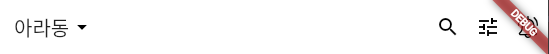
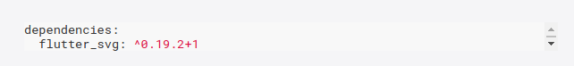
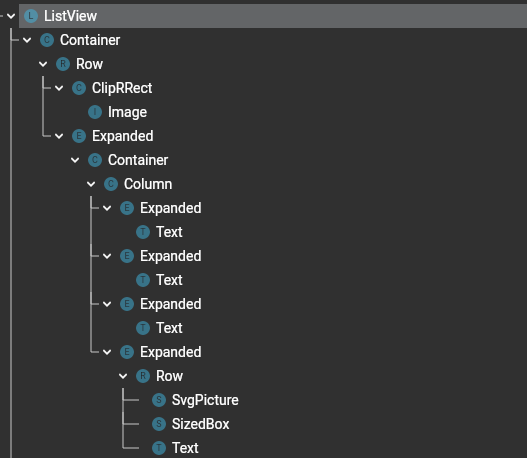
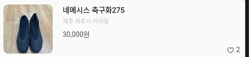

<div class='typora-export os-windows'>
<div id='write'  class=''><p><span>sources : [</span></p><ul><li><a href='https://github.com/sudar-life/flutter_carrot_market' target='_blank' class='url'>https://github.com/sudar-life/flutter_carrot_market</a></li></ul><p><span>]</span></p><h1><a name="app-ui" class="md-header-anchor"></a><span>App (UI)</span></h1><h2><a name="보편적인-app의-구조" class="md-header-anchor"></a><span>보편적인 App의 구조</span></h2><ul><li><p><span>MaterialApp : Theme 지정</span></p><ul><li><p><span>Scaffold : 자주 사용되는 Mobile App 레이아웃 </span></p><ul><li><p><span>appBar : AppBar</span></p><ul><li><span>leading</span></li><li><span>title</span></li><li><span>actions</span></li></ul></li><li><p><span>body : </span></p></li><li><p><span>bottomNavigator : </span></p></li></ul></li></ul></li></ul><p>&nbsp;</p><h1><a name="appbar" class="md-header-anchor"></a><code>AppBar</code></h1><blockquote><p></p><p><span>fig. Result</span></p></blockquote><pre spellcheck="false" class="md-fences md-end-block ty-contain-cm modeLoaded" lang="dart" style="break-inside: unset;"><div class="CodeMirror cm-s-inner CodeMirror-wrap" lang="dart"><div style="overflow: hidden; position: relative; width: 3px; height: 0px; top: 16px; left: 20px;"><textarea autocorrect="off" autocapitalize="off" spellcheck="false" tabindex="0" style="position: absolute; bottom: -1em; padding: 0px; width: 1000px; height: 1em; outline: none;"></textarea></div><div class="CodeMirror-scrollbar-filler" cm-not-content="true"></div><div class="CodeMirror-gutter-filler" cm-not-content="true"></div><div class="CodeMirror-scroll" tabindex="-1"><div class="CodeMirror-sizer" style="margin-left: 0px; margin-bottom: 0px; border-right-width: 0px; padding-right: 0px; padding-bottom: 0px;"><div style="position: relative; top: 0px;"><div class="CodeMirror-lines" role="presentation"><div role="presentation" style="position: relative; outline: none;"><div class="CodeMirror-measure"><pre><span>xxxxxxxxxx</span></pre></div><div class="CodeMirror-measure"></div><div style="position: relative; z-index: 1;"></div><div class="CodeMirror-code" role="presentation" style=""><div class="CodeMirror-activeline" style="position: relative;"><div class="CodeMirror-activeline-background CodeMirror-linebackground"></div><div class="CodeMirror-gutter-background CodeMirror-activeline-gutter" style="left: 0px; width: 0px;"></div><pre class=" CodeMirror-line " role="presentation"><span role="presentation" style="padding-right: 0.1px;"><span class="cm-variable">AppBar</span>(</span></pre></div><pre class=" CodeMirror-line " role="presentation"><span role="presentation" style="padding-right: 0.1px;"> &nbsp; &nbsp;<span class="cm-variable">title</span>: <span class="cm-variable">GestureDetector</span>(</span></pre><pre class=" CodeMirror-line " role="presentation"><span role="presentation" style="padding-right: 0.1px;"> &nbsp; &nbsp; &nbsp; &nbsp;<span class="cm-variable">onTap</span>: () {</span></pre><pre class=" CodeMirror-line " role="presentation"><span role="presentation" style="padding-right: 0.1px;"> &nbsp; &nbsp; &nbsp; &nbsp; &nbsp; &nbsp;<span class="cm-variable">print</span>(<span class="cm-string">"click"</span>);</span></pre><pre class=" CodeMirror-line " role="presentation"><span role="presentation" style="padding-right: 0.1px;"> &nbsp; &nbsp; &nbsp;  },</span></pre><pre class=" CodeMirror-line " role="presentation"><span role="presentation" style="padding-right: 0.1px;"> &nbsp; &nbsp; &nbsp; &nbsp;<span class="cm-variable">child</span>: <span class="cm-variable">PopupMenuButton</span><span class="cm-operator">&lt;</span><span class="cm-builtin">String</span><span class="cm-operator">&gt;</span>(</span></pre><pre class=" CodeMirror-line " role="presentation"><span role="presentation" style="padding-right: 0.1px;"> &nbsp; &nbsp; &nbsp; &nbsp; &nbsp; &nbsp;<span class="cm-variable">offset</span>: <span class="cm-variable">Offset</span>(<span class="cm-number">0</span>, <span class="cm-number">10</span>),</span></pre><pre class=" CodeMirror-line " role="presentation"><span role="presentation" style="padding-right: 0.1px;"> &nbsp; &nbsp; &nbsp; &nbsp; &nbsp; &nbsp;<span class="cm-variable">shape</span>: <span class="cm-variable">ShapeBorder</span>.<span class="cm-variable">lerp</span>(</span></pre><pre class=" CodeMirror-line " role="presentation"><span role="presentation" style="padding-right: 0.1px;"> &nbsp; &nbsp; &nbsp; &nbsp; &nbsp; &nbsp; &nbsp; &nbsp;<span class="cm-variable">RoundedRectangleBorder</span>(<span class="cm-variable">borderRadius</span>: <span class="cm-variable">BorderRadius</span>.<span class="cm-variable">circular</span>(<span class="cm-number">10.0</span>)),</span></pre><pre class=" CodeMirror-line " role="presentation"><span role="presentation" style="padding-right: 0.1px;"> &nbsp; &nbsp; &nbsp; &nbsp; &nbsp; &nbsp; &nbsp; &nbsp;<span class="cm-variable">RoundedRectangleBorder</span>(<span class="cm-variable">borderRadius</span>: <span class="cm-variable">BorderRadius</span>.<span class="cm-variable">circular</span>(<span class="cm-number">10.0</span>)),</span></pre><pre class=" CodeMirror-line " role="presentation"><span role="presentation" style="padding-right: 0.1px;"> &nbsp; &nbsp; &nbsp; &nbsp; &nbsp; &nbsp; &nbsp; &nbsp;<span class="cm-number">1</span>,</span></pre><pre class=" CodeMirror-line " role="presentation"><span role="presentation" style="padding-right: 0.1px;"> &nbsp; &nbsp; &nbsp; &nbsp; &nbsp;  ),</span></pre><pre class=" CodeMirror-line " role="presentation"><span role="presentation" style="padding-right: 0.1px;"> &nbsp; &nbsp; &nbsp; &nbsp; &nbsp; &nbsp;<span class="cm-variable">onSelected</span>: (<span class="cm-builtin">String</span> <span class="cm-variable">where</span>) {</span></pre><pre class=" CodeMirror-line " role="presentation"><span role="presentation" style="padding-right: 0.1px;"> &nbsp; &nbsp; &nbsp; &nbsp; &nbsp; &nbsp; &nbsp; &nbsp;<span class="cm-variable">setState</span>(() {</span></pre><pre class=" CodeMirror-line " role="presentation"><span role="presentation" style="padding-right: 0.1px;"> &nbsp; &nbsp; &nbsp; &nbsp; &nbsp; &nbsp; &nbsp; &nbsp; &nbsp; &nbsp;<span class="cm-variable">_currentLocation</span> <span class="cm-operator">=</span> <span class="cm-variable">where</span>;</span></pre><pre class=" CodeMirror-line " role="presentation"><span role="presentation" style="padding-right: 0.1px;"> &nbsp; &nbsp; &nbsp; &nbsp; &nbsp; &nbsp; &nbsp;  });</span></pre><pre class=" CodeMirror-line " role="presentation"><span role="presentation" style="padding-right: 0.1px;"> &nbsp; &nbsp; &nbsp; &nbsp; &nbsp;  },</span></pre><pre class=" CodeMirror-line " role="presentation"><span role="presentation" style="padding-right: 0.1px;"> &nbsp; &nbsp; &nbsp; &nbsp; &nbsp; &nbsp;<span class="cm-variable">itemBuilder</span>: (<span class="cm-variable">BuildContext</span> <span class="cm-variable">context</span>) {</span></pre><pre class=" CodeMirror-line " role="presentation"><span role="presentation" style="padding-right: 0.1px;"> &nbsp; &nbsp; &nbsp; &nbsp; &nbsp; &nbsp; &nbsp; &nbsp;<span class="cm-keyword">return</span> [</span></pre><pre class=" CodeMirror-line " role="presentation"><span role="presentation" style="padding-right: 0.1px;"> &nbsp; &nbsp; &nbsp; &nbsp; &nbsp; &nbsp; &nbsp; &nbsp; &nbsp; &nbsp;<span class="cm-variable">PopupMenuItem</span>(<span class="cm-variable">value</span>: <span class="cm-string">"ara"</span>, <span class="cm-variable">child</span>: <span class="cm-variable">Text</span>(<span class="cm-string">"아라동"</span>)),</span></pre><pre class=" CodeMirror-line " role="presentation"><span role="presentation" style="padding-right: 0.1px;"> &nbsp; &nbsp; &nbsp; &nbsp; &nbsp; &nbsp; &nbsp; &nbsp; &nbsp; &nbsp;<span class="cm-variable">PopupMenuItem</span>(<span class="cm-variable">value</span>: <span class="cm-string">"ora"</span>, <span class="cm-variable">child</span>: <span class="cm-variable">Text</span>(<span class="cm-string">"오라동"</span>)),</span></pre><pre class=" CodeMirror-line " role="presentation"><span role="presentation" style="padding-right: 0.1px;"> &nbsp; &nbsp; &nbsp; &nbsp; &nbsp; &nbsp; &nbsp; &nbsp; &nbsp; &nbsp;<span class="cm-variable">PopupMenuItem</span>(<span class="cm-variable">value</span>: <span class="cm-string">"donam"</span>, <span class="cm-variable">child</span>: <span class="cm-variable">Text</span>(<span class="cm-string">"도남동"</span>)),</span></pre><pre class=" CodeMirror-line " role="presentation"><span role="presentation" style="padding-right: 0.1px;"> &nbsp; &nbsp; &nbsp; &nbsp; &nbsp; &nbsp; &nbsp;  ];</span></pre><pre class=" CodeMirror-line " role="presentation"><span role="presentation" style="padding-right: 0.1px;"> &nbsp; &nbsp; &nbsp; &nbsp; &nbsp;  },</span></pre><pre class=" CodeMirror-line " role="presentation"><span role="presentation" style="padding-right: 0.1px;"> &nbsp; &nbsp; &nbsp; &nbsp; &nbsp; &nbsp;<span class="cm-variable">child</span>: <span class="cm-variable">Row</span>(</span></pre><pre class=" CodeMirror-line " role="presentation"><span role="presentation" style="padding-right: 0.1px;"> &nbsp; &nbsp; &nbsp; &nbsp; &nbsp; &nbsp; &nbsp; &nbsp;<span class="cm-variable">children</span>: [</span></pre><pre class=" CodeMirror-line " role="presentation"><span role="presentation" style="padding-right: 0.1px;"> &nbsp; &nbsp; &nbsp; &nbsp; &nbsp; &nbsp; &nbsp; &nbsp; &nbsp; &nbsp;<span class="cm-variable">Text</span>(</span></pre><pre class=" CodeMirror-line " role="presentation"><span role="presentation" style="padding-right: 0.1px;"> &nbsp; &nbsp; &nbsp; &nbsp; &nbsp; &nbsp; &nbsp; &nbsp; &nbsp; &nbsp; &nbsp; &nbsp;<span class="cm-variable">_mapLocationTypeToName</span>[<span class="cm-variable">_currentLocation</span>]<span class="cm-operator">!</span>,</span></pre><pre class=" CodeMirror-line " role="presentation"><span role="presentation" style="padding-right: 0.1px;"> &nbsp; &nbsp; &nbsp; &nbsp; &nbsp; &nbsp; &nbsp; &nbsp; &nbsp;  ),</span></pre><pre class=" CodeMirror-line " role="presentation"><span role="presentation" style="padding-right: 0.1px;"> &nbsp; &nbsp; &nbsp; &nbsp; &nbsp; &nbsp; &nbsp; &nbsp; &nbsp; &nbsp;<span class="cm-variable">Icon</span>(<span class="cm-variable">Icons</span>.<span class="cm-variable">arrow_drop_down</span>)</span></pre><pre class=" CodeMirror-line " role="presentation"><span role="presentation" style="padding-right: 0.1px;"> &nbsp; &nbsp; &nbsp; &nbsp; &nbsp; &nbsp; &nbsp;  ],</span></pre><pre class=" CodeMirror-line " role="presentation"><span role="presentation" style="padding-right: 0.1px;"> &nbsp; &nbsp; &nbsp; &nbsp; &nbsp;  ),</span></pre><pre class=" CodeMirror-line " role="presentation"><span role="presentation" style="padding-right: 0.1px;"> &nbsp; &nbsp; &nbsp;  ),</span></pre><pre class=" CodeMirror-line " role="presentation"><span role="presentation" style="padding-right: 0.1px;"> &nbsp;  ),</span></pre><pre class=" CodeMirror-line " role="presentation"><span role="presentation" style="padding-right: 0.1px;"> &nbsp; &nbsp;<span class="cm-variable">elevation</span>: <span class="cm-number">1</span>,</span></pre><pre class=" CodeMirror-line " role="presentation"><span role="presentation" style="padding-right: 0.1px;"> &nbsp; &nbsp;<span class="cm-variable">actions</span>: [</span></pre><pre class=" CodeMirror-line " role="presentation"><span role="presentation" style="padding-right: 0.1px;"> &nbsp; &nbsp; &nbsp; &nbsp;<span class="cm-variable">IconButton</span>(<span class="cm-variable">onPressed</span>: () {}, <span class="cm-variable">icon</span>: <span class="cm-variable">Icon</span>(<span class="cm-variable">Icons</span>.<span class="cm-variable">search</span>)),</span></pre><pre class=" CodeMirror-line " role="presentation"><span role="presentation" style="padding-right: 0.1px;"> &nbsp; &nbsp; &nbsp; &nbsp;<span class="cm-variable">IconButton</span>(<span class="cm-variable">onPressed</span>: () {}, <span class="cm-variable">icon</span>: <span class="cm-variable">Icon</span>(<span class="cm-variable">Icons</span>.<span class="cm-variable">tune</span>)),</span></pre><pre class=" CodeMirror-line " role="presentation"><span role="presentation" style="padding-right: 0.1px;"> &nbsp; &nbsp; &nbsp; &nbsp;<span class="cm-variable">IconButton</span>(</span></pre><pre class=" CodeMirror-line " role="presentation"><span role="presentation" style="padding-right: 0.1px;"> &nbsp; &nbsp; &nbsp; &nbsp; &nbsp; &nbsp;<span class="cm-variable">onPressed</span>: () {},</span></pre><pre class=" CodeMirror-line " role="presentation"><span role="presentation" style="padding-right: 0.1px;"> &nbsp; &nbsp; &nbsp; &nbsp; &nbsp; &nbsp;<span class="cm-variable">icon</span>: <span class="cm-variable">SvgPicture</span>.<span class="cm-variable">asset</span>(</span></pre><pre class=" CodeMirror-line " role="presentation"><span role="presentation" style="padding-right: 0.1px;"> &nbsp; &nbsp; &nbsp; &nbsp; &nbsp; &nbsp; &nbsp; &nbsp;<span class="cm-string">"assets/carrot/svg/bell.svg"</span>,</span></pre><pre class=" CodeMirror-line " role="presentation"><span role="presentation" style="padding-right: 0.1px;"> &nbsp; &nbsp; &nbsp; &nbsp; &nbsp; &nbsp; &nbsp; &nbsp;<span class="cm-variable">width</span>: <span class="cm-number">22</span>,</span></pre><pre class=" CodeMirror-line " role="presentation"><span role="presentation" style="padding-right: 0.1px;"> &nbsp; &nbsp; &nbsp; &nbsp; &nbsp;  ),</span></pre><pre class=" CodeMirror-line " role="presentation"><span role="presentation" style="padding-right: 0.1px;"> &nbsp; &nbsp; &nbsp;  ),</span></pre><pre class=" CodeMirror-line " role="presentation"><span role="presentation" style="padding-right: 0.1px;"> &nbsp; &nbsp; &nbsp; &nbsp;<span class="cm-comment">// IconButton(</span></span></pre><pre class=" CodeMirror-line " role="presentation"><span role="presentation" style="padding-right: 0.1px;"> &nbsp; &nbsp; &nbsp; &nbsp;<span class="cm-comment">// &nbsp; &nbsp; onPressed: () {},</span></span></pre><pre class=" CodeMirror-line " role="presentation"><span role="presentation" style="padding-right: 0.1px;"> &nbsp; &nbsp; &nbsp; &nbsp;<span class="cm-comment">// &nbsp; &nbsp; icon: SvgPicture.asset("assets/carrot/svg/bell.svg", width: 22)),</span></span></pre><pre class=" CodeMirror-line " role="presentation"><span role="presentation" style="padding-right: 0.1px;"> &nbsp;  ],</span></pre><pre class=" CodeMirror-line " role="presentation"><span role="presentation" style="padding-right: 0.1px;"> &nbsp; &nbsp;<span class="cm-comment">// backgroundColor: Colors.white, // 보통</span></span></pre><pre class=" CodeMirror-line " role="presentation"><span role="presentation" style="padding-right: 0.1px;">);</span></pre></div></div></div></div></div><div style="position: absolute; height: 0px; width: 1px; border-bottom: 0px solid transparent; top: 1326px;"></div><div class="CodeMirror-gutters" style="display: none; height: 1326px;"></div></div></div></pre><ul><li><span>leading : 정사각으로 잘림</span></li><li><code>backgroundColor</code><span> 속성을 통해 색을 변경할 수 있으나 보통 상위의 </span><code>MaterialApp.ThemeData</code><span>의 </span><code>PrimaryColor</code><span> 속성을 통해 변경함</span></li></ul><h2><a name="gesturedetector" class="md-header-anchor"></a><code>GestureDetector</code></h2><pre spellcheck="false" class="md-fences md-end-block ty-contain-cm modeLoaded" lang="dart"><div class="CodeMirror cm-s-inner CodeMirror-wrap" lang="dart"><div style="overflow: hidden; position: relative; width: 3px; height: 0px; top: 16px; left: 20px;"><textarea autocorrect="off" autocapitalize="off" spellcheck="false" tabindex="0" style="position: absolute; bottom: -1em; padding: 0px; width: 1000px; height: 1em; outline: none;"></textarea></div><div class="CodeMirror-scrollbar-filler" cm-not-content="true"></div><div class="CodeMirror-gutter-filler" cm-not-content="true"></div><div class="CodeMirror-scroll" tabindex="-1"><div class="CodeMirror-sizer" style="margin-left: 0px; margin-bottom: 0px; border-right-width: 0px; padding-right: 0px; padding-bottom: 0px;"><div style="position: relative; top: 0px;"><div class="CodeMirror-lines" role="presentation"><div role="presentation" style="position: relative; outline: none;"><div class="CodeMirror-measure"><pre><span>xxxxxxxxxx</span></pre></div><div class="CodeMirror-measure"></div><div style="position: relative; z-index: 1;"></div><div class="CodeMirror-code" role="presentation" style=""><div class="CodeMirror-activeline" style="position: relative;"><div class="CodeMirror-activeline-background CodeMirror-linebackground"></div><div class="CodeMirror-gutter-background CodeMirror-activeline-gutter" style="left: 0px; width: 0px;"></div><pre class=" CodeMirror-line " role="presentation"><span role="presentation" style="padding-right: 0.1px;"><span class="cm-variable">estureDetector</span>(</span></pre></div><pre class=" CodeMirror-line " role="presentation"><span role="presentation" style="padding-right: 0.1px;"> &nbsp; &nbsp;<span class="cm-variable">onTap</span>: () {</span></pre><pre class=" CodeMirror-line " role="presentation"><span role="presentation" style="padding-right: 0.1px;"> &nbsp; &nbsp; &nbsp; &nbsp;<span class="cm-variable">print</span>(<span class="cm-string">"click"</span>);</span></pre><pre class=" CodeMirror-line " role="presentation"><span role="presentation" style="padding-right: 0.1px;"> &nbsp;  },</span></pre><pre class=" CodeMirror-line " role="presentation"><span role="presentation" style="padding-right: 0.1px;"> &nbsp; &nbsp;<span class="cm-variable">child</span>: <span class="cm-variable">Container</span>(), </span></pre><pre class=" CodeMirror-line " role="presentation"><span role="presentation" style="padding-right: 0.1px;"> &nbsp; &nbsp;<span class="cm-variable">onLongPressed</span>: (){</span></pre><pre class=" CodeMirror-line " role="presentation"><span role="presentation" style="padding-right: 0.1px;"> &nbsp; &nbsp; &nbsp; &nbsp;</span></pre><pre class=" CodeMirror-line " role="presentation"><span role="presentation" style="padding-right: 0.1px;"> &nbsp;  },</span></pre><pre class=" CodeMirror-line " role="presentation"><span role="presentation" style="padding-right: 0.1px;">);</span></pre></div></div></div></div></div><div style="position: absolute; height: 0px; width: 1px; border-bottom: 0px solid transparent; top: 234px;"></div><div class="CodeMirror-gutters" style="display: none; height: 234px;"></div></div></div></pre><ul><li><p><code>InkWell</code></p><ul><li><code>GestureDetector</code><span>와 비슷한 역할을 수행하지만 눌렀을 때 리플효과를 줌</span></li></ul></li></ul><p>&nbsp;</p><h2><a name="icon" class="md-header-anchor"></a><code>Icon()</code></h2><ul><li><code>IconData</code><span> 를 필요로 함</span></li></ul><p>&nbsp;</p><h2><a name="svg-사용하기" class="md-header-anchor"></a><code>svg</code><span> 사용하기</span></h2><ul><li><p><a href='https://pub.dev/packages/flutter_svg' target='_blank' class='url'>https://pub.dev/packages/flutter_svg</a><span> 로 이동</span></p></li><li><p><span>Installing tab으로 이동</span></p><blockquote><p></p><ul><li><code>flutter_svg: ^0.19.2+1</code><span> 복사</span></li></ul></blockquote></li><li><p><code>pubspec.yaml</code><span> 파일에서 dependencies 항목에 복사한 문자열 넣은 후 </span><code>flutter pub get</code><span>  명령어 수행</span></p><ul><li><code>dev_dependencies</code><span> : 개발 중에만 사용되는 패키지로 추후 배포시에는 포함되지 않는 패키지</span></li></ul></li><li><p><span>code</span></p><pre spellcheck="false" class="md-fences md-end-block ty-contain-cm modeLoaded" lang="dart"><div class="CodeMirror cm-s-inner CodeMirror-wrap" lang="dart"><div style="overflow: hidden; position: relative; width: 3px; height: 0px; top: 16px; left: 20px;"><textarea autocorrect="off" autocapitalize="off" spellcheck="false" tabindex="0" style="position: absolute; bottom: -1em; padding: 0px; width: 1000px; height: 1em; outline: none;"></textarea></div><div class="CodeMirror-scrollbar-filler" cm-not-content="true"></div><div class="CodeMirror-gutter-filler" cm-not-content="true"></div><div class="CodeMirror-scroll" tabindex="-1"><div class="CodeMirror-sizer" style="margin-left: 0px; margin-bottom: 0px; border-right-width: 0px; padding-right: 0px; padding-bottom: 0px;"><div style="position: relative; top: 0px;"><div class="CodeMirror-lines" role="presentation"><div role="presentation" style="position: relative; outline: none;"><div class="CodeMirror-measure"><pre><span>xxxxxxxxxx</span></pre></div><div class="CodeMirror-measure"></div><div style="position: relative; z-index: 1;"></div><div class="CodeMirror-code" role="presentation" style=""><div class="CodeMirror-activeline" style="position: relative;"><div class="CodeMirror-activeline-background CodeMirror-linebackground"></div><div class="CodeMirror-gutter-background CodeMirror-activeline-gutter" style="left: 0px; width: 0px;"></div><pre class=" CodeMirror-line " role="presentation"><span role="presentation" style="padding-right: 0.1px;"><span class="cm-variable">IconButton</span>(</span></pre></div><pre class=" CodeMirror-line " role="presentation"><span role="presentation" style="padding-right: 0.1px;"> &nbsp; &nbsp;<span class="cm-variable">onPressed</span>: () {},</span></pre><pre class=" CodeMirror-line " role="presentation"><span role="presentation" style="padding-right: 0.1px;"> &nbsp; &nbsp;<span class="cm-variable">icon</span>: <span class="cm-variable">SvgPicture</span>.<span class="cm-variable">asset</span>(</span></pre><pre class=" CodeMirror-line " role="presentation"><span role="presentation" style="padding-right: 0.1px;"> &nbsp; &nbsp; &nbsp; &nbsp;<span class="cm-string">"assets/carrot/svg/bell.svg"</span>,</span></pre><pre class=" CodeMirror-line " role="presentation"><span role="presentation" style="padding-right: 0.1px;"> &nbsp; &nbsp; &nbsp; &nbsp;<span class="cm-variable">width</span>: <span class="cm-number">22</span>,</span></pre><pre class=" CodeMirror-line " role="presentation"><span role="presentation" style="padding-right: 0.1px;"> &nbsp;  ),</span></pre><pre class=" CodeMirror-line " role="presentation"><span role="presentation" style="padding-right: 0.1px;">)</span></pre></div></div></div></div></div><div style="position: absolute; height: 0px; width: 1px; border-bottom: 0px solid transparent; top: 182px;"></div><div class="CodeMirror-gutters" style="display: none; height: 182px;"></div></div></div></pre></li></ul><h2><a name="elevation" class="md-header-anchor"></a><code>elevation</code></h2><ul><li><span>AppBar의 높이를 조절함 (그림자 효과)</span></li></ul><p>&nbsp;</p><h1><a name="body" class="md-header-anchor"></a><code>Body</code></h1><pre spellcheck="false" class="md-fences md-end-block ty-contain-cm modeLoaded" lang="dart"><div class="CodeMirror cm-s-inner CodeMirror-wrap" lang="dart"><div style="overflow: hidden; position: relative; width: 3px; height: 0px; top: 16px; left: 20px;"><textarea autocorrect="off" autocapitalize="off" spellcheck="false" tabindex="0" style="position: absolute; bottom: -1em; padding: 0px; width: 1000px; height: 1em; outline: none;"></textarea></div><div class="CodeMirror-scrollbar-filler" cm-not-content="true"></div><div class="CodeMirror-gutter-filler" cm-not-content="true"></div><div class="CodeMirror-scroll" tabindex="-1"><div class="CodeMirror-sizer" style="margin-left: 0px; margin-bottom: 0px; border-right-width: 0px; padding-right: 0px; padding-bottom: 0px;"><div style="position: relative; top: 0px;"><div class="CodeMirror-lines" role="presentation"><div role="presentation" style="position: relative; outline: none;"><div class="CodeMirror-measure"><pre><span>xxxxxxxxxx</span></pre></div><div class="CodeMirror-measure"></div><div style="position: relative; z-index: 1;"></div><div class="CodeMirror-code" role="presentation" style=""><div class="CodeMirror-activeline" style="position: relative;"><div class="CodeMirror-activeline-background CodeMirror-linebackground"></div><div class="CodeMirror-gutter-background CodeMirror-activeline-gutter" style="left: 0px; width: 0px;"></div><pre class=" CodeMirror-line " role="presentation"><span role="presentation" style="padding-right: 0.1px;"><span class="cm-variable">Widget</span> <span class="cm-variable">_makeDataList</span>(<span class="cm-variable">List</span><span class="cm-operator">&lt;</span><span class="cm-variable">Map</span><span class="cm-operator">&lt;</span><span class="cm-builtin">String</span>, <span class="cm-builtin">String</span><span class="cm-operator">&gt;&gt;</span> <span class="cm-variable">datas</span>) {</span></pre></div><pre class=" CodeMirror-line " role="presentation"><span role="presentation" style="padding-right: 0.1px;"> &nbsp; &nbsp;<span class="cm-keyword">return</span> <span class="cm-variable">ListView</span>.<span class="cm-variable">separated</span>(</span></pre><pre class=" CodeMirror-line " role="presentation"><span role="presentation" style="padding-right: 0.1px;"> &nbsp; &nbsp; &nbsp; &nbsp;<span class="cm-variable">padding</span>: <span class="cm-keyword">const</span> <span class="cm-variable">EdgeInsets</span>.<span class="cm-variable">symmetric</span>(<span class="cm-variable">horizontal</span>: <span class="cm-number">10</span>),</span></pre><pre class=" CodeMirror-line " role="presentation"><span role="presentation" style="padding-right: 0.1px;"> &nbsp; &nbsp; &nbsp; &nbsp;<span class="cm-variable">itemBuilder</span>: (<span class="cm-variable">BuildContext</span> <span class="cm-variable">_context</span>, <span class="cm-builtin">int</span> <span class="cm-variable">index</span>) {</span></pre><pre class=" CodeMirror-line " role="presentation"><span role="presentation" style="padding-right: 0.1px;"> &nbsp; &nbsp; &nbsp; &nbsp; &nbsp; &nbsp;<span class="cm-keyword">return</span> <span class="cm-variable">_listViewItem</span>(<span class="cm-variable">datas</span>, <span class="cm-variable">index</span>);</span></pre><pre class=" CodeMirror-line " role="presentation"><span role="presentation" style="padding-right: 0.1px;"> &nbsp; &nbsp; &nbsp;  },</span></pre><pre class=" CodeMirror-line " role="presentation"><span role="presentation" style="padding-right: 0.1px;"> &nbsp; &nbsp; &nbsp; &nbsp;<span class="cm-variable">separatorBuilder</span>: (<span class="cm-variable">BuildContext</span> <span class="cm-variable">_context</span>, <span class="cm-builtin">int</span> <span class="cm-variable">index</span>) {</span></pre><pre class=" CodeMirror-line " role="presentation"><span role="presentation" style="padding-right: 0.1px;"> &nbsp; &nbsp; &nbsp; &nbsp; &nbsp; &nbsp;<span class="cm-keyword">return</span> <span class="cm-variable">Container</span>(<span class="cm-variable">height</span>: <span class="cm-number">1</span>, <span class="cm-variable">color</span>: <span class="cm-variable">Colors</span>.<span class="cm-variable">black</span>.<span class="cm-variable">withOpacity</span>(<span class="cm-number">0.4</span>));</span></pre><pre class=" CodeMirror-line " role="presentation"><span role="presentation" style="padding-right: 0.1px;"> &nbsp; &nbsp; &nbsp;  },</span></pre><pre class=" CodeMirror-line " role="presentation"><span role="presentation" style="padding-right: 0.1px;"> &nbsp; &nbsp; &nbsp; &nbsp;<span class="cm-variable">itemCount</span>: <span class="cm-number">10</span>,</span></pre><pre class=" CodeMirror-line " role="presentation"><span role="presentation" style="padding-right: 0.1px;"> &nbsp;  );</span></pre><pre class=" CodeMirror-line " role="presentation"><span role="presentation" style="padding-right: 0.1px;">}</span></pre></div></div></div></div></div><div style="position: absolute; height: 0px; width: 1px; border-bottom: 0px solid transparent; top: 312px;"></div><div class="CodeMirror-gutters" style="display: none; height: 312px;"></div></div></div></pre><blockquote><p></p></blockquote><h2><a name="listview-사용하기" class="md-header-anchor"></a><code>ListView</code><span> 사용하기</span></h2><ul><li><p><code>ListView</code><span> 생성하기</span></p><pre spellcheck="false" class="md-fences md-end-block ty-contain-cm modeLoaded" lang="dart"><div class="CodeMirror cm-s-inner CodeMirror-wrap" lang="dart"><div style="overflow: hidden; position: relative; width: 3px; height: 0px; top: 16px; left: 20px;"><textarea autocorrect="off" autocapitalize="off" spellcheck="false" tabindex="0" style="position: absolute; bottom: -1em; padding: 0px; width: 1000px; height: 1em; outline: none;"></textarea></div><div class="CodeMirror-scrollbar-filler" cm-not-content="true"></div><div class="CodeMirror-gutter-filler" cm-not-content="true"></div><div class="CodeMirror-scroll" tabindex="-1"><div class="CodeMirror-sizer" style="margin-left: 0px; margin-bottom: 0px; border-right-width: 0px; padding-right: 0px; padding-bottom: 0px;"><div style="position: relative; top: 0px;"><div class="CodeMirror-lines" role="presentation"><div role="presentation" style="position: relative; outline: none;"><div class="CodeMirror-measure"><pre><span>xxxxxxxxxx</span></pre></div><div class="CodeMirror-measure"></div><div style="position: relative; z-index: 1;"></div><div class="CodeMirror-code" role="presentation" style=""><div class="CodeMirror-activeline" style="position: relative;"><div class="CodeMirror-activeline-background CodeMirror-linebackground"></div><div class="CodeMirror-gutter-background CodeMirror-activeline-gutter" style="left: 0px; width: 0px;"></div><pre class=" CodeMirror-line " role="presentation"><span role="presentation" style="padding-right: 0.1px;"><span class="cm-keyword">return</span> <span class="cm-variable">ListView</span>.<span class="cm-variable">separated</span>(</span></pre></div><pre class=" CodeMirror-line " role="presentation"><span role="presentation" style="padding-right: 0.1px;"> &nbsp; &nbsp;<span class="cm-variable">padding</span>: <span class="cm-keyword">const</span> <span class="cm-variable">EdgeInsets</span>.<span class="cm-variable">symmetric</span>(<span class="cm-variable">horizontal</span>: <span class="cm-number">10</span>),</span></pre><pre class=" CodeMirror-line " role="presentation"><span role="presentation" style="padding-right: 0.1px;"> &nbsp; &nbsp;<span class="cm-variable">itemBuilder</span>: (<span class="cm-variable">BuildContext</span> <span class="cm-variable">_context</span>, <span class="cm-builtin">int</span> <span class="cm-variable">index</span>) {...}</span></pre><pre class=" CodeMirror-line " role="presentation"><span role="presentation" style="padding-right: 0.1px;"> &nbsp; &nbsp;<span class="cm-variable">separatorBuilder</span>: (<span class="cm-variable">BuildContext</span> <span class="cm-variable">_context</span>, <span class="cm-builtin">int</span> <span class="cm-variable">index</span>) {...},</span></pre><pre class=" CodeMirror-line " role="presentation"><span role="presentation" style="padding-right: 0.1px;"> &nbsp; &nbsp;<span class="cm-variable">itemCount</span>: <span class="cm-variable">$</span>{ <span class="cm-variable">ListItem</span> <span class="cm-variable">수</span>}</span></pre><pre class=" CodeMirror-line " role="presentation"><span role="presentation" style="padding-right: 0.1px;">);</span></pre></div></div></div></div></div><div style="position: absolute; height: 0px; width: 1px; border-bottom: 0px solid transparent; top: 156px;"></div><div class="CodeMirror-gutters" style="display: none; height: 156px;"></div></div></div></pre></li><li><p><code>separatorBuilder</code></p><ul><li><span>Opacity 사용하는 방법 확인하기</span></li></ul><pre spellcheck="false" class="md-fences md-end-block ty-contain-cm modeLoaded" lang="dart"><div class="CodeMirror cm-s-inner CodeMirror-wrap" lang="dart"><div style="overflow: hidden; position: relative; width: 3px; height: 0px; top: 16px; left: 20px;"><textarea autocorrect="off" autocapitalize="off" spellcheck="false" tabindex="0" style="position: absolute; bottom: -1em; padding: 0px; width: 1000px; height: 1em; outline: none;"></textarea></div><div class="CodeMirror-scrollbar-filler" cm-not-content="true"></div><div class="CodeMirror-gutter-filler" cm-not-content="true"></div><div class="CodeMirror-scroll" tabindex="-1"><div class="CodeMirror-sizer" style="margin-left: 0px; margin-bottom: 0px; border-right-width: 0px; padding-right: 0px; padding-bottom: 0px;"><div style="position: relative; top: 0px;"><div class="CodeMirror-lines" role="presentation"><div role="presentation" style="position: relative; outline: none;"><div class="CodeMirror-measure"><pre><span>xxxxxxxxxx</span></pre></div><div class="CodeMirror-measure"></div><div style="position: relative; z-index: 1;"></div><div class="CodeMirror-code" role="presentation"><div class="CodeMirror-activeline" style="position: relative;"><div class="CodeMirror-activeline-background CodeMirror-linebackground"></div><div class="CodeMirror-gutter-background CodeMirror-activeline-gutter" style="left: 0px; width: 0px;"></div><pre class=" CodeMirror-line " role="presentation"><span role="presentation" style="padding-right: 0.1px;"><span class="cm-variable">separatorBuilder</span>: (<span class="cm-variable">BuildContext</span> <span class="cm-variable">_context</span>, <span class="cm-builtin">int</span> <span class="cm-variable">index</span>) {</span></pre></div><pre class=" CodeMirror-line " role="presentation"><span role="presentation" style="padding-right: 0.1px;"> &nbsp; &nbsp;<span class="cm-keyword">return</span> <span class="cm-variable">Container</span>(<span class="cm-variable">height</span>: <span class="cm-number">1</span>, <span class="cm-variable">color</span>: <span class="cm-variable">Colors</span>.<span class="cm-variable">black</span>.<span class="cm-variable">withOpacity</span>(<span class="cm-number">0.4</span>));</span></pre><pre class=" CodeMirror-line " role="presentation"><span role="presentation" style="padding-right: 0.1px;">}</span></pre></div></div></div></div></div><div style="position: absolute; height: 0px; width: 1px; border-bottom: 0px solid transparent; top: 78px;"></div><div class="CodeMirror-gutters" style="display: none; height: 78px;"></div></div></div></pre></li></ul><h3><a name="itembuilder" class="md-header-anchor"></a><span>itemBuilder</span></h3><pre spellcheck="false" class="md-fences md-end-block ty-contain-cm modeLoaded" lang="dart" style="break-inside: unset;"><div class="CodeMirror cm-s-inner CodeMirror-wrap" lang="dart"><div style="overflow: hidden; position: relative; width: 3px; height: 0px; top: 16px; left: 20px;"><textarea autocorrect="off" autocapitalize="off" spellcheck="false" tabindex="0" style="position: absolute; bottom: -1em; padding: 0px; width: 1000px; height: 1em; outline: none;"></textarea></div><div class="CodeMirror-scrollbar-filler" cm-not-content="true"></div><div class="CodeMirror-gutter-filler" cm-not-content="true"></div><div class="CodeMirror-scroll" tabindex="-1"><div class="CodeMirror-sizer" style="margin-left: 0px; margin-bottom: 0px; border-right-width: 0px; padding-right: 0px; padding-bottom: 0px;"><div style="position: relative; top: 0px;"><div class="CodeMirror-lines" role="presentation"><div role="presentation" style="position: relative; outline: none;"><div class="CodeMirror-measure"><pre><span>xxxxxxxxxx</span></pre></div><div class="CodeMirror-measure"></div><div style="position: relative; z-index: 1;"></div><div class="CodeMirror-code" role="presentation" style=""><div class="CodeMirror-activeline" style="position: relative;"><div class="CodeMirror-activeline-background CodeMirror-linebackground"></div><div class="CodeMirror-gutter-background CodeMirror-activeline-gutter" style="left: 0px; width: 0px;"></div><pre class=" CodeMirror-line " role="presentation"><span role="presentation" style="padding-right: 0.1px;"><span class="cm-variable">Widget</span> <span class="cm-variable">_listViewItem</span>(<span class="cm-variable">List</span><span class="cm-operator">&lt;</span><span class="cm-variable">Map</span><span class="cm-operator">&lt;</span><span class="cm-builtin">String</span>, <span class="cm-builtin">String</span><span class="cm-operator">&gt;&gt;</span> <span class="cm-variable">datas</span>, <span class="cm-builtin">int</span> <span class="cm-variable">index</span>) {</span></pre></div><pre class=" CodeMirror-line " role="presentation"><span role="presentation" style="padding-right: 0.1px;"> &nbsp; &nbsp;<span class="cm-keyword">return</span> <span class="cm-variable">GestureDetector</span>(</span></pre><pre class=" CodeMirror-line " role="presentation"><span role="presentation" style="padding-right: 0.1px;"> &nbsp; &nbsp; &nbsp; &nbsp;<span class="cm-variable">onTap</span>: () {</span></pre><pre class=" CodeMirror-line " role="presentation"><span role="presentation" style="padding-right: 0.1px;"> &nbsp; &nbsp; &nbsp; &nbsp; &nbsp; &nbsp;<span class="cm-variable">Navigator</span>.<span class="cm-variable">push</span>(</span></pre><pre class=" CodeMirror-line " role="presentation"><span role="presentation" style="padding-right: 0.1px;"> &nbsp; &nbsp; &nbsp; &nbsp; &nbsp; &nbsp; &nbsp; &nbsp;<span class="cm-variable">context</span>,</span></pre><pre class=" CodeMirror-line " role="presentation"><span role="presentation" style="padding-right: 0.1px;"> &nbsp; &nbsp; &nbsp; &nbsp; &nbsp; &nbsp; &nbsp; &nbsp;<span class="cm-variable">MaterialPageRoute</span>(</span></pre><pre class=" CodeMirror-line " role="presentation"><span role="presentation" style="padding-right: 0.1px;"> &nbsp; &nbsp; &nbsp; &nbsp; &nbsp; &nbsp; &nbsp; &nbsp; &nbsp; &nbsp;<span class="cm-variable">builder</span>: (<span class="cm-variable">BuildContext</span> <span class="cm-variable">context</span>) {</span></pre><pre class=" CodeMirror-line " role="presentation"><span role="presentation" style="padding-right: 0.1px;"> &nbsp; &nbsp; &nbsp; &nbsp; &nbsp; &nbsp; &nbsp; &nbsp; &nbsp; &nbsp; &nbsp; &nbsp;<span class="cm-keyword">return</span> <span class="cm-variable">DetailContentView</span>(<span class="cm-variable">data</span>: <span class="cm-variable">datas</span>[<span class="cm-variable">index</span>]);</span></pre><pre class=" CodeMirror-line " role="presentation"><span role="presentation" style="padding-right: 0.1px;"> &nbsp; &nbsp; &nbsp; &nbsp; &nbsp; &nbsp; &nbsp; &nbsp; &nbsp;  },</span></pre><pre class=" CodeMirror-line " role="presentation"><span role="presentation" style="padding-right: 0.1px;"> &nbsp; &nbsp; &nbsp; &nbsp; &nbsp; &nbsp; &nbsp;  ),</span></pre><pre class=" CodeMirror-line " role="presentation"><span role="presentation" style="padding-right: 0.1px;"> &nbsp; &nbsp; &nbsp; &nbsp; &nbsp;  );</span></pre><pre class=" CodeMirror-line " role="presentation"><span role="presentation" style="padding-right: 0.1px;"> &nbsp; &nbsp; &nbsp; &nbsp; &nbsp; &nbsp;<span class="cm-variable">print</span>(<span class="cm-variable">datas</span>[<span class="cm-variable">index</span>][<span class="cm-string">"title"</span>]);</span></pre><pre class=" CodeMirror-line " role="presentation"><span role="presentation" style="padding-right: 0.1px;"> &nbsp; &nbsp; &nbsp;  },</span></pre><pre class=" CodeMirror-line " role="presentation"><span role="presentation" style="padding-right: 0.1px;"> &nbsp; &nbsp; &nbsp; &nbsp;<span class="cm-variable">child</span>: <span class="cm-variable">Container</span>(</span></pre><pre class=" CodeMirror-line " role="presentation"><span role="presentation" style="padding-right: 0.1px;"> &nbsp; &nbsp; &nbsp; &nbsp; &nbsp; &nbsp;<span class="cm-variable">padding</span>: <span class="cm-keyword">const</span> <span class="cm-variable">EdgeInsets</span>.<span class="cm-variable">symmetric</span>(<span class="cm-variable">vertical</span>: <span class="cm-number">10</span>),</span></pre><pre class=" CodeMirror-line " role="presentation"><span role="presentation" style="padding-right: 0.1px;"> &nbsp; &nbsp; &nbsp; &nbsp; &nbsp; &nbsp;<span class="cm-variable">child</span>: <span class="cm-variable">Row</span>(</span></pre><pre class=" CodeMirror-line " role="presentation"><span role="presentation" style="padding-right: 0.1px;"> &nbsp; &nbsp; &nbsp; &nbsp; &nbsp; &nbsp; &nbsp; &nbsp;<span class="cm-variable">children</span>: [</span></pre><pre class=" CodeMirror-line " role="presentation"><span role="presentation" style="padding-right: 0.1px;"> &nbsp; &nbsp; &nbsp; &nbsp; &nbsp; &nbsp; &nbsp; &nbsp; &nbsp; &nbsp;<span class="cm-variable">ClipRRect</span>(</span></pre><pre class=" CodeMirror-line " role="presentation"><span role="presentation" style="padding-right: 0.1px;"> &nbsp; &nbsp; &nbsp; &nbsp; &nbsp; &nbsp; &nbsp; &nbsp; &nbsp; &nbsp; &nbsp; &nbsp;<span class="cm-variable">borderRadius</span>: <span class="cm-variable">BorderRadius</span>.<span class="cm-variable">all</span>(<span class="cm-variable">Radius</span>.<span class="cm-variable">circular</span>(<span class="cm-number">10</span>)),</span></pre><pre class=" CodeMirror-line " role="presentation"><span role="presentation" style="padding-right: 0.1px;"> &nbsp; &nbsp; &nbsp; &nbsp; &nbsp; &nbsp; &nbsp; &nbsp; &nbsp; &nbsp; &nbsp; &nbsp;<span class="cm-variable">child</span>: <span class="cm-variable">Hero</span>(</span></pre><pre class=" CodeMirror-line " role="presentation"><span role="presentation" style="padding-right: 0.1px;"> &nbsp; &nbsp; &nbsp; &nbsp; &nbsp; &nbsp; &nbsp; &nbsp; &nbsp; &nbsp; &nbsp; &nbsp; &nbsp; &nbsp;<span class="cm-variable">tag</span>: <span class="cm-variable">datas</span>[<span class="cm-variable">index</span>][<span class="cm-string">"cid"</span>]<span class="cm-operator">!</span>,</span></pre><pre class=" CodeMirror-line " role="presentation"><span role="presentation" style="padding-right: 0.1px;"> &nbsp; &nbsp; &nbsp; &nbsp; &nbsp; &nbsp; &nbsp; &nbsp; &nbsp; &nbsp; &nbsp; &nbsp; &nbsp; &nbsp;<span class="cm-variable">child</span>: <span class="cm-variable">Image</span>.<span class="cm-variable">asset</span>(</span></pre><pre class=" CodeMirror-line " role="presentation"><span role="presentation" style="padding-right: 0.1px;"> &nbsp; &nbsp; &nbsp; &nbsp; &nbsp; &nbsp; &nbsp; &nbsp; &nbsp; &nbsp; &nbsp; &nbsp; &nbsp; &nbsp; &nbsp; &nbsp;<span class="cm-variable">datas</span>[<span class="cm-variable">index</span>][<span class="cm-string">"image"</span>]<span class="cm-operator">!</span>,</span></pre><pre class=" CodeMirror-line " role="presentation"><span role="presentation" style="padding-right: 0.1px;"> &nbsp; &nbsp; &nbsp; &nbsp; &nbsp; &nbsp; &nbsp; &nbsp; &nbsp; &nbsp; &nbsp; &nbsp; &nbsp; &nbsp; &nbsp; &nbsp;<span class="cm-variable">width</span>: <span class="cm-variable">sSize</span>,</span></pre><pre class=" CodeMirror-line " role="presentation"><span role="presentation" style="padding-right: 0.1px;"> &nbsp; &nbsp; &nbsp; &nbsp; &nbsp; &nbsp; &nbsp; &nbsp; &nbsp; &nbsp; &nbsp; &nbsp; &nbsp; &nbsp; &nbsp; &nbsp;<span class="cm-variable">height</span>: <span class="cm-variable">sSize</span>,</span></pre><pre class=" CodeMirror-line " role="presentation"><span role="presentation" style="padding-right: 0.1px;"> &nbsp; &nbsp; &nbsp; &nbsp; &nbsp; &nbsp; &nbsp; &nbsp; &nbsp; &nbsp; &nbsp; &nbsp; &nbsp;  ),</span></pre><pre class=" CodeMirror-line " role="presentation"><span role="presentation" style="padding-right: 0.1px;"> &nbsp; &nbsp; &nbsp; &nbsp; &nbsp; &nbsp; &nbsp; &nbsp; &nbsp; &nbsp; &nbsp;  ),</span></pre><pre class=" CodeMirror-line " role="presentation"><span role="presentation" style="padding-right: 0.1px;"> &nbsp; &nbsp; &nbsp; &nbsp; &nbsp; &nbsp; &nbsp; &nbsp; &nbsp;  ),</span></pre><pre class=" CodeMirror-line " role="presentation"><span role="presentation" style="padding-right: 0.1px;"> &nbsp; &nbsp; &nbsp; &nbsp; &nbsp; &nbsp; &nbsp; &nbsp; &nbsp; &nbsp;<span class="cm-variable">Expanded</span>(</span></pre><pre class=" CodeMirror-line " role="presentation"><span role="presentation" style="padding-right: 0.1px;"> &nbsp; &nbsp; &nbsp; &nbsp; &nbsp; &nbsp; &nbsp; &nbsp; &nbsp; &nbsp; &nbsp; &nbsp;<span class="cm-variable">child</span>: <span class="cm-variable">Container</span>(</span></pre><pre class=" CodeMirror-line " role="presentation"><span role="presentation" style="padding-right: 0.1px;"> &nbsp; &nbsp; &nbsp; &nbsp; &nbsp; &nbsp; &nbsp; &nbsp; &nbsp; &nbsp; &nbsp; &nbsp; &nbsp; &nbsp;<span class="cm-variable">height</span>: <span class="cm-variable">sSize</span>,</span></pre><pre class=" CodeMirror-line " role="presentation"><span role="presentation" style="padding-right: 0.1px;"> &nbsp; &nbsp; &nbsp; &nbsp; &nbsp; &nbsp; &nbsp; &nbsp; &nbsp; &nbsp; &nbsp; &nbsp; &nbsp; &nbsp;<span class="cm-variable">padding</span>: <span class="cm-keyword">const</span> <span class="cm-variable">EdgeInsets</span>.<span class="cm-variable">only</span>(<span class="cm-variable">left</span>: <span class="cm-number">20</span>),</span></pre><pre class=" CodeMirror-line " role="presentation"><span role="presentation" style="padding-right: 0.1px;"> &nbsp; &nbsp; &nbsp; &nbsp; &nbsp; &nbsp; &nbsp; &nbsp; &nbsp; &nbsp; &nbsp; &nbsp; &nbsp; &nbsp;<span class="cm-variable">child</span>: <span class="cm-variable">Column</span>(</span></pre><pre class=" CodeMirror-line " role="presentation"><span role="presentation" style="padding-right: 0.1px;"> &nbsp; &nbsp; &nbsp; &nbsp; &nbsp; &nbsp; &nbsp; &nbsp; &nbsp; &nbsp; &nbsp; &nbsp; &nbsp; &nbsp; &nbsp; &nbsp;<span class="cm-variable">crossAxisAlignment</span>: <span class="cm-variable">CrossAxisAlignment</span>.<span class="cm-variable">start</span>,</span></pre><pre class=" CodeMirror-line " role="presentation"><span role="presentation" style="padding-right: 0.1px;"> &nbsp; &nbsp; &nbsp; &nbsp; &nbsp; &nbsp; &nbsp; &nbsp; &nbsp; &nbsp; &nbsp; &nbsp; &nbsp; &nbsp; &nbsp; &nbsp;<span class="cm-variable">children</span>: [</span></pre><pre class=" CodeMirror-line " role="presentation"><span role="presentation" style="padding-right: 0.1px;"> &nbsp; &nbsp; &nbsp; &nbsp; &nbsp; &nbsp; &nbsp; &nbsp; &nbsp; &nbsp; &nbsp; &nbsp; &nbsp; &nbsp; &nbsp; &nbsp; &nbsp; &nbsp;<span class="cm-variable">Expanded</span>(</span></pre><pre class=" CodeMirror-line " role="presentation"><span role="presentation" style="padding-right: 0.1px;"> &nbsp; &nbsp; &nbsp; &nbsp; &nbsp; &nbsp; &nbsp; &nbsp; &nbsp; &nbsp; &nbsp; &nbsp; &nbsp; &nbsp; &nbsp; &nbsp; &nbsp; &nbsp; &nbsp; &nbsp;<span class="cm-variable">flex</span>: <span class="cm-number">1</span>,</span></pre><pre class=" CodeMirror-line " role="presentation"><span role="presentation" style="padding-right: 0.1px;"> &nbsp; &nbsp; &nbsp; &nbsp; &nbsp; &nbsp; &nbsp; &nbsp; &nbsp; &nbsp; &nbsp; &nbsp; &nbsp; &nbsp; &nbsp; &nbsp; &nbsp; &nbsp; &nbsp; &nbsp;<span class="cm-variable">child</span>: <span class="cm-variable">Text</span>(</span></pre><pre class=" CodeMirror-line " role="presentation"><span role="presentation" style="padding-right: 0.1px;"> &nbsp; &nbsp; &nbsp; &nbsp; &nbsp; &nbsp; &nbsp; &nbsp; &nbsp; &nbsp; &nbsp; &nbsp; &nbsp; &nbsp; &nbsp; &nbsp; &nbsp; &nbsp; &nbsp; &nbsp; &nbsp; &nbsp;<span class="cm-variable">datas</span>[<span class="cm-variable">index</span>][<span class="cm-string">"title"</span>]<span class="cm-operator">!</span>,</span></pre><pre class=" CodeMirror-line " role="presentation"><span role="presentation" style="padding-right: 0.1px;"> &nbsp; &nbsp; &nbsp; &nbsp; &nbsp; &nbsp; &nbsp; &nbsp; &nbsp; &nbsp; &nbsp; &nbsp; &nbsp; &nbsp; &nbsp; &nbsp; &nbsp; &nbsp; &nbsp; &nbsp; &nbsp; &nbsp;<span class="cm-variable">overflow</span>: <span class="cm-variable">TextOverflow</span>.<span class="cm-variable">ellipsis</span>,</span></pre><pre class=" CodeMirror-line " role="presentation"><span role="presentation" style="padding-right: 0.1px;"> &nbsp; &nbsp; &nbsp; &nbsp; &nbsp; &nbsp; &nbsp; &nbsp; &nbsp; &nbsp; &nbsp; &nbsp; &nbsp; &nbsp; &nbsp; &nbsp; &nbsp; &nbsp; &nbsp; &nbsp; &nbsp; &nbsp;<span class="cm-variable">style</span>: <span class="cm-variable">TextStyle</span>(</span></pre><pre class=" CodeMirror-line " role="presentation"><span role="presentation" style="padding-right: 0.1px;"> &nbsp; &nbsp; &nbsp; &nbsp; &nbsp; &nbsp; &nbsp; &nbsp; &nbsp; &nbsp; &nbsp; &nbsp; &nbsp; &nbsp; &nbsp; &nbsp; &nbsp; &nbsp; &nbsp; &nbsp; &nbsp; &nbsp; &nbsp; &nbsp;<span class="cm-variable">fontSize</span>: <span class="cm-number">15</span>, <span class="cm-variable">fontWeight</span>: <span class="cm-variable">FontWeight</span>.<span class="cm-variable">bold</span>),</span></pre><pre class=" CodeMirror-line " role="presentation"><span role="presentation" style="padding-right: 0.1px;"> &nbsp; &nbsp; &nbsp; &nbsp; &nbsp; &nbsp; &nbsp; &nbsp; &nbsp; &nbsp; &nbsp; &nbsp; &nbsp; &nbsp; &nbsp; &nbsp; &nbsp; &nbsp; &nbsp;  ),</span></pre><pre class=" CodeMirror-line " role="presentation"><span role="presentation" style="padding-right: 0.1px;"> &nbsp; &nbsp; &nbsp; &nbsp; &nbsp; &nbsp; &nbsp; &nbsp; &nbsp; &nbsp; &nbsp; &nbsp; &nbsp; &nbsp; &nbsp; &nbsp; &nbsp;  ),</span></pre><pre class=" CodeMirror-line " role="presentation"><span role="presentation" style="padding-right: 0.1px;"> &nbsp; &nbsp; &nbsp; &nbsp; &nbsp; &nbsp; &nbsp; &nbsp; &nbsp; &nbsp; &nbsp; &nbsp; &nbsp; &nbsp; &nbsp; &nbsp; &nbsp; &nbsp;<span class="cm-variable">Expanded</span>(</span></pre><pre class=" CodeMirror-line " role="presentation"><span role="presentation" style="padding-right: 0.1px;"> &nbsp; &nbsp; &nbsp; &nbsp; &nbsp; &nbsp; &nbsp; &nbsp; &nbsp; &nbsp; &nbsp; &nbsp; &nbsp; &nbsp; &nbsp; &nbsp; &nbsp; &nbsp; &nbsp; &nbsp;<span class="cm-variable">flex</span>: <span class="cm-number">1</span>,</span></pre><pre class=" CodeMirror-line " role="presentation"><span role="presentation" style="padding-right: 0.1px;"> &nbsp; &nbsp; &nbsp; &nbsp; &nbsp; &nbsp; &nbsp; &nbsp; &nbsp; &nbsp; &nbsp; &nbsp; &nbsp; &nbsp; &nbsp; &nbsp; &nbsp; &nbsp; &nbsp; &nbsp;<span class="cm-variable">child</span>: <span class="cm-variable">Text</span>(</span></pre><pre class=" CodeMirror-line " role="presentation"><span role="presentation" style="padding-right: 0.1px;"> &nbsp; &nbsp; &nbsp; &nbsp; &nbsp; &nbsp; &nbsp; &nbsp; &nbsp; &nbsp; &nbsp; &nbsp; &nbsp; &nbsp; &nbsp; &nbsp; &nbsp; &nbsp; &nbsp; &nbsp; &nbsp; &nbsp;<span class="cm-variable">datas</span>[<span class="cm-variable">index</span>][<span class="cm-string">"location"</span>]<span class="cm-operator">!</span>,</span></pre><pre class=" CodeMirror-line " role="presentation"><span role="presentation" style="padding-right: 0.1px;"> &nbsp; &nbsp; &nbsp; &nbsp; &nbsp; &nbsp; &nbsp; &nbsp; &nbsp; &nbsp; &nbsp; &nbsp; &nbsp; &nbsp; &nbsp; &nbsp; &nbsp; &nbsp; &nbsp; &nbsp; &nbsp; &nbsp;<span class="cm-variable">style</span>: <span class="cm-variable">TextStyle</span>(</span></pre><pre class=" CodeMirror-line " role="presentation"><span role="presentation" style="padding-right: 0.1px;"> &nbsp; &nbsp; &nbsp; &nbsp; &nbsp; &nbsp; &nbsp; &nbsp; &nbsp; &nbsp; &nbsp; &nbsp; &nbsp; &nbsp; &nbsp; &nbsp; &nbsp; &nbsp; &nbsp; &nbsp; &nbsp; &nbsp; &nbsp; &nbsp;<span class="cm-variable">fontSize</span>: <span class="cm-number">12</span>,</span></pre><pre class=" CodeMirror-line " role="presentation"><span role="presentation" style="padding-right: 0.1px;"> &nbsp; &nbsp; &nbsp; &nbsp; &nbsp; &nbsp; &nbsp; &nbsp; &nbsp; &nbsp; &nbsp; &nbsp; &nbsp; &nbsp; &nbsp; &nbsp; &nbsp; &nbsp; &nbsp; &nbsp; &nbsp; &nbsp; &nbsp; &nbsp;<span class="cm-variable">color</span>: <span class="cm-variable">Colors</span>.<span class="cm-variable">black</span>.<span class="cm-variable">withOpacity</span>(<span class="cm-number">0.3</span>),</span></pre><pre class=" CodeMirror-line " role="presentation"><span role="presentation" style="padding-right: 0.1px;"> &nbsp; &nbsp; &nbsp; &nbsp; &nbsp; &nbsp; &nbsp; &nbsp; &nbsp; &nbsp; &nbsp; &nbsp; &nbsp; &nbsp; &nbsp; &nbsp; &nbsp; &nbsp; &nbsp; &nbsp; &nbsp;  ),</span></pre><pre class=" CodeMirror-line " role="presentation"><span role="presentation" style="padding-right: 0.1px;"> &nbsp; &nbsp; &nbsp; &nbsp; &nbsp; &nbsp; &nbsp; &nbsp; &nbsp; &nbsp; &nbsp; &nbsp; &nbsp; &nbsp; &nbsp; &nbsp; &nbsp; &nbsp; &nbsp;  ),</span></pre><pre class=" CodeMirror-line " role="presentation"><span role="presentation" style="padding-right: 0.1px;"> &nbsp; &nbsp; &nbsp; &nbsp; &nbsp; &nbsp; &nbsp; &nbsp; &nbsp; &nbsp; &nbsp; &nbsp; &nbsp; &nbsp; &nbsp; &nbsp; &nbsp;  ),</span></pre><pre class=" CodeMirror-line " role="presentation"><span role="presentation" style="padding-right: 0.1px;"> &nbsp; &nbsp; &nbsp; &nbsp; &nbsp; &nbsp; &nbsp; &nbsp; &nbsp; &nbsp; &nbsp; &nbsp; &nbsp; &nbsp; &nbsp; &nbsp; &nbsp; &nbsp;<span class="cm-variable">Expanded</span>(</span></pre><pre class=" CodeMirror-line " role="presentation"><span role="presentation" style="padding-right: 0.1px;"> &nbsp; &nbsp; &nbsp; &nbsp; &nbsp; &nbsp; &nbsp; &nbsp; &nbsp; &nbsp; &nbsp; &nbsp; &nbsp; &nbsp; &nbsp; &nbsp; &nbsp; &nbsp; &nbsp; &nbsp;<span class="cm-variable">flex</span>: <span class="cm-number">1</span>,</span></pre><pre class=" CodeMirror-line " role="presentation"><span role="presentation" style="padding-right: 0.1px;"> &nbsp; &nbsp; &nbsp; &nbsp; &nbsp; &nbsp; &nbsp; &nbsp; &nbsp; &nbsp; &nbsp; &nbsp; &nbsp; &nbsp; &nbsp; &nbsp; &nbsp; &nbsp; &nbsp; &nbsp;<span class="cm-variable">child</span>: <span class="cm-variable">Text</span>(</span></pre><pre class=" CodeMirror-line " role="presentation"><span role="presentation" style="padding-right: 0.1px;"> &nbsp; &nbsp; &nbsp; &nbsp; &nbsp; &nbsp; &nbsp; &nbsp; &nbsp; &nbsp; &nbsp; &nbsp; &nbsp; &nbsp; &nbsp; &nbsp; &nbsp; &nbsp; &nbsp; &nbsp; &nbsp; &nbsp;<span class="cm-variable">DataUtils</span>.<span class="cm-variable">calcStringToWon</span>(<span class="cm-variable">datas</span>[<span class="cm-variable">index</span>][<span class="cm-string">"price"</span>]<span class="cm-operator">!</span>),</span></pre><pre class=" CodeMirror-line " role="presentation"><span role="presentation" style="padding-right: 0.1px;"> &nbsp; &nbsp; &nbsp; &nbsp; &nbsp; &nbsp; &nbsp; &nbsp; &nbsp; &nbsp; &nbsp; &nbsp; &nbsp; &nbsp; &nbsp; &nbsp; &nbsp; &nbsp; &nbsp; &nbsp; &nbsp; &nbsp;<span class="cm-variable">style</span>: <span class="cm-variable">TextStyle</span>(<span class="cm-variable">fontWeight</span>: <span class="cm-variable">FontWeight</span>.<span class="cm-variable">w500</span>),</span></pre><pre class=" CodeMirror-line " role="presentation"><span role="presentation" style="padding-right: 0.1px;"> &nbsp; &nbsp; &nbsp; &nbsp; &nbsp; &nbsp; &nbsp; &nbsp; &nbsp; &nbsp; &nbsp; &nbsp; &nbsp; &nbsp; &nbsp; &nbsp; &nbsp; &nbsp; &nbsp;  ),</span></pre><pre class=" CodeMirror-line " role="presentation"><span role="presentation" style="padding-right: 0.1px;"> &nbsp; &nbsp; &nbsp; &nbsp; &nbsp; &nbsp; &nbsp; &nbsp; &nbsp; &nbsp; &nbsp; &nbsp; &nbsp; &nbsp; &nbsp; &nbsp; &nbsp;  ),</span></pre><pre class=" CodeMirror-line " role="presentation"><span role="presentation" style="padding-right: 0.1px;"> &nbsp; &nbsp; &nbsp; &nbsp; &nbsp; &nbsp; &nbsp; &nbsp; &nbsp; &nbsp; &nbsp; &nbsp; &nbsp; &nbsp; &nbsp; &nbsp; &nbsp; &nbsp;<span class="cm-variable">Expanded</span>(</span></pre><pre class=" CodeMirror-line " role="presentation"><span role="presentation" style="padding-right: 0.1px;"> &nbsp; &nbsp; &nbsp; &nbsp; &nbsp; &nbsp; &nbsp; &nbsp; &nbsp; &nbsp; &nbsp; &nbsp; &nbsp; &nbsp; &nbsp; &nbsp; &nbsp; &nbsp; &nbsp; &nbsp;<span class="cm-variable">flex</span>: <span class="cm-number">1</span>,</span></pre><pre class=" CodeMirror-line " role="presentation"><span role="presentation" style="padding-right: 0.1px;"> &nbsp; &nbsp; &nbsp; &nbsp; &nbsp; &nbsp; &nbsp; &nbsp; &nbsp; &nbsp; &nbsp; &nbsp; &nbsp; &nbsp; &nbsp; &nbsp; &nbsp; &nbsp; &nbsp; &nbsp;<span class="cm-variable">child</span>: <span class="cm-variable">Row</span>(</span></pre><pre class=" CodeMirror-line " role="presentation"><span role="presentation" style="padding-right: 0.1px;"> &nbsp; &nbsp; &nbsp; &nbsp; &nbsp; &nbsp; &nbsp; &nbsp; &nbsp; &nbsp; &nbsp; &nbsp; &nbsp; &nbsp; &nbsp; &nbsp; &nbsp; &nbsp; &nbsp; &nbsp; &nbsp; &nbsp;<span class="cm-variable">mainAxisAlignment</span>: <span class="cm-variable">MainAxisAlignment</span>.<span class="cm-variable">end</span>,</span></pre><pre class=" CodeMirror-line " role="presentation"><span role="presentation" style="padding-right: 0.1px;"> &nbsp; &nbsp; &nbsp; &nbsp; &nbsp; &nbsp; &nbsp; &nbsp; &nbsp; &nbsp; &nbsp; &nbsp; &nbsp; &nbsp; &nbsp; &nbsp; &nbsp; &nbsp; &nbsp; &nbsp; &nbsp; &nbsp;<span class="cm-variable">crossAxisAlignment</span>: <span class="cm-variable">CrossAxisAlignment</span>.<span class="cm-variable">end</span>,</span></pre><pre class=" CodeMirror-line " role="presentation"><span role="presentation" style="padding-right: 0.1px;"> &nbsp; &nbsp; &nbsp; &nbsp; &nbsp; &nbsp; &nbsp; &nbsp; &nbsp; &nbsp; &nbsp; &nbsp; &nbsp; &nbsp; &nbsp; &nbsp; &nbsp; &nbsp; &nbsp; &nbsp; &nbsp; &nbsp;<span class="cm-variable">children</span>: [</span></pre><pre class=" CodeMirror-line " role="presentation"><span role="presentation" style="padding-right: 0.1px;"> &nbsp; &nbsp; &nbsp; &nbsp; &nbsp; &nbsp; &nbsp; &nbsp; &nbsp; &nbsp; &nbsp; &nbsp; &nbsp; &nbsp; &nbsp; &nbsp; &nbsp; &nbsp; &nbsp; &nbsp; &nbsp; &nbsp; &nbsp; &nbsp;<span class="cm-variable">SvgPicture</span>.<span class="cm-variable">asset</span>(</span></pre><pre class=" CodeMirror-line " role="presentation"><span role="presentation" style="padding-right: 0.1px;"> &nbsp; &nbsp; &nbsp; &nbsp; &nbsp; &nbsp; &nbsp; &nbsp; &nbsp; &nbsp; &nbsp; &nbsp; &nbsp; &nbsp; &nbsp; &nbsp; &nbsp; &nbsp; &nbsp; &nbsp; &nbsp; &nbsp; &nbsp; &nbsp; &nbsp; &nbsp;<span class="cm-string">"assets/carrot/svg/heart_off.svg"</span>,</span></pre><pre class=" CodeMirror-line " role="presentation"><span role="presentation" style="padding-right: 0.1px;"> &nbsp; &nbsp; &nbsp; &nbsp; &nbsp; &nbsp; &nbsp; &nbsp; &nbsp; &nbsp; &nbsp; &nbsp; &nbsp; &nbsp; &nbsp; &nbsp; &nbsp; &nbsp; &nbsp; &nbsp; &nbsp; &nbsp; &nbsp; &nbsp; &nbsp; &nbsp;<span class="cm-variable">width</span>: <span class="cm-number">13</span>,</span></pre><pre class=" CodeMirror-line " role="presentation"><span role="presentation" style="padding-right: 0.1px;"> &nbsp; &nbsp; &nbsp; &nbsp; &nbsp; &nbsp; &nbsp; &nbsp; &nbsp; &nbsp; &nbsp; &nbsp; &nbsp; &nbsp; &nbsp; &nbsp; &nbsp; &nbsp; &nbsp; &nbsp; &nbsp; &nbsp; &nbsp; &nbsp; &nbsp; &nbsp;<span class="cm-variable">height</span>: <span class="cm-number">13</span>,</span></pre><pre class=" CodeMirror-line " role="presentation"><span role="presentation" style="padding-right: 0.1px;"> &nbsp; &nbsp; &nbsp; &nbsp; &nbsp; &nbsp; &nbsp; &nbsp; &nbsp; &nbsp; &nbsp; &nbsp; &nbsp; &nbsp; &nbsp; &nbsp; &nbsp; &nbsp; &nbsp; &nbsp; &nbsp; &nbsp; &nbsp;  ),</span></pre><pre class=" CodeMirror-line " role="presentation"><span role="presentation" style="padding-right: 0.1px;"> &nbsp; &nbsp; &nbsp; &nbsp; &nbsp; &nbsp; &nbsp; &nbsp; &nbsp; &nbsp; &nbsp; &nbsp; &nbsp; &nbsp; &nbsp; &nbsp; &nbsp; &nbsp; &nbsp; &nbsp; &nbsp; &nbsp; &nbsp; &nbsp;<span class="cm-variable">SizedBox</span>(</span></pre><pre class=" CodeMirror-line " role="presentation"><span role="presentation" style="padding-right: 0.1px;"> &nbsp; &nbsp; &nbsp; &nbsp; &nbsp; &nbsp; &nbsp; &nbsp; &nbsp; &nbsp; &nbsp; &nbsp; &nbsp; &nbsp; &nbsp; &nbsp; &nbsp; &nbsp; &nbsp; &nbsp; &nbsp; &nbsp; &nbsp; &nbsp; &nbsp; &nbsp;<span class="cm-variable">width</span>: <span class="cm-number">5</span>,</span></pre><pre class=" CodeMirror-line " role="presentation"><span role="presentation" style="padding-right: 0.1px;"> &nbsp; &nbsp; &nbsp; &nbsp; &nbsp; &nbsp; &nbsp; &nbsp; &nbsp; &nbsp; &nbsp; &nbsp; &nbsp; &nbsp; &nbsp; &nbsp; &nbsp; &nbsp; &nbsp; &nbsp; &nbsp; &nbsp; &nbsp;  ),</span></pre><pre class=" CodeMirror-line " role="presentation"><span role="presentation" style="padding-right: 0.1px;"> &nbsp; &nbsp; &nbsp; &nbsp; &nbsp; &nbsp; &nbsp; &nbsp; &nbsp; &nbsp; &nbsp; &nbsp; &nbsp; &nbsp; &nbsp; &nbsp; &nbsp; &nbsp; &nbsp; &nbsp; &nbsp; &nbsp; &nbsp; &nbsp;<span class="cm-variable">Text</span>(<span class="cm-variable">datas</span>[<span class="cm-variable">index</span>][<span class="cm-string">"likes"</span>]<span class="cm-operator">!</span>),</span></pre><pre class=" CodeMirror-line " role="presentation"><span role="presentation" style="padding-right: 0.1px;"> &nbsp; &nbsp; &nbsp; &nbsp; &nbsp; &nbsp; &nbsp; &nbsp; &nbsp; &nbsp; &nbsp; &nbsp; &nbsp; &nbsp; &nbsp; &nbsp; &nbsp; &nbsp; &nbsp; &nbsp; &nbsp;  ],</span></pre><pre class=" CodeMirror-line " role="presentation"><span role="presentation" style="padding-right: 0.1px;"> &nbsp; &nbsp; &nbsp; &nbsp; &nbsp; &nbsp; &nbsp; &nbsp; &nbsp; &nbsp; &nbsp; &nbsp; &nbsp; &nbsp; &nbsp; &nbsp; &nbsp; &nbsp; &nbsp;  ),</span></pre><pre class=" CodeMirror-line " role="presentation"><span role="presentation" style="padding-right: 0.1px;"> &nbsp; &nbsp; &nbsp; &nbsp; &nbsp; &nbsp; &nbsp; &nbsp; &nbsp; &nbsp; &nbsp; &nbsp; &nbsp; &nbsp; &nbsp; &nbsp; &nbsp;  ),</span></pre><pre class=" CodeMirror-line " role="presentation"><span role="presentation" style="padding-right: 0.1px;"> &nbsp; &nbsp; &nbsp; &nbsp; &nbsp; &nbsp; &nbsp; &nbsp; &nbsp; &nbsp; &nbsp; &nbsp; &nbsp; &nbsp; &nbsp;  ]),</span></pre><pre class=" CodeMirror-line " role="presentation"><span role="presentation" style="padding-right: 0.1px;"> &nbsp; &nbsp; &nbsp; &nbsp; &nbsp; &nbsp; &nbsp; &nbsp; &nbsp; &nbsp; &nbsp;  ),</span></pre><pre class=" CodeMirror-line " role="presentation"><span role="presentation" style="padding-right: 0.1px;"> &nbsp; &nbsp; &nbsp; &nbsp; &nbsp; &nbsp; &nbsp; &nbsp; &nbsp;  )</span></pre><pre class=" CodeMirror-line " role="presentation"><span role="presentation" style="padding-right: 0.1px;"> &nbsp; &nbsp; &nbsp; &nbsp; &nbsp; &nbsp; &nbsp;  ],</span></pre><pre class=" CodeMirror-line " role="presentation"><span role="presentation" style="padding-right: 0.1px;"> &nbsp; &nbsp; &nbsp; &nbsp; &nbsp;  ),</span></pre><pre class=" CodeMirror-line " role="presentation"><span role="presentation" style="padding-right: 0.1px;"> &nbsp; &nbsp; &nbsp;  ),</span></pre><pre class=" CodeMirror-line " role="presentation"><span role="presentation" style="padding-right: 0.1px;"> &nbsp;  );</span></pre><pre class=" CodeMirror-line " role="presentation"><span role="presentation" style="padding-right: 0.1px;">}</span></pre></div></div></div></div></div><div style="position: absolute; height: 0px; width: 1px; border-bottom: 0px solid transparent; top: 2262px;"></div><div class="CodeMirror-gutters" style="display: none; height: 2262px;"></div></div></div></pre><blockquote><p></p></blockquote><h4><a name="svg" class="md-header-anchor"></a><code>svg</code></h4><pre spellcheck="false" class="md-fences md-end-block ty-contain-cm modeLoaded" lang="dart"><div class="CodeMirror cm-s-inner CodeMirror-wrap" lang="dart"><div style="overflow: hidden; position: relative; width: 3px; height: 0px; top: 16px; left: 20px;"><textarea autocorrect="off" autocapitalize="off" spellcheck="false" tabindex="0" style="position: absolute; bottom: -1em; padding: 0px; width: 1000px; height: 1em; outline: none;"></textarea></div><div class="CodeMirror-scrollbar-filler" cm-not-content="true"></div><div class="CodeMirror-gutter-filler" cm-not-content="true"></div><div class="CodeMirror-scroll" tabindex="-1"><div class="CodeMirror-sizer" style="margin-left: 0px; margin-bottom: 0px; border-right-width: 0px; padding-right: 0px; padding-bottom: 0px;"><div style="position: relative; top: 0px;"><div class="CodeMirror-lines" role="presentation"><div role="presentation" style="position: relative; outline: none;"><div class="CodeMirror-measure"><pre><span>xxxxxxxxxx</span></pre></div><div class="CodeMirror-measure"></div><div style="position: relative; z-index: 1;"></div><div class="CodeMirror-code" role="presentation" style=""><div class="CodeMirror-activeline" style="position: relative;"><div class="CodeMirror-activeline-background CodeMirror-linebackground"></div><div class="CodeMirror-gutter-background CodeMirror-activeline-gutter" style="left: 0px; width: 0px;"></div><pre class=" CodeMirror-line " role="presentation"><span role="presentation" style="padding-right: 0.1px;"><span class="cm-variable">SvgPicture</span>.<span class="cm-variable">asset</span>(</span></pre></div><pre class=" CodeMirror-line " role="presentation"><span role="presentation" style="padding-right: 0.1px;"> &nbsp; &nbsp;<span class="cm-string">"assets/carrot/svg/heart_off.svg"</span>,</span></pre><pre class=" CodeMirror-line " role="presentation"><span role="presentation" style="padding-right: 0.1px;"> &nbsp; &nbsp;<span class="cm-variable">width</span>: <span class="cm-number">13</span>,</span></pre><pre class=" CodeMirror-line " role="presentation"><span role="presentation" style="padding-right: 0.1px;"> &nbsp; &nbsp;<span class="cm-variable">height</span>: <span class="cm-number">13</span>,</span></pre><pre class=" CodeMirror-line " role="presentation"><span role="presentation" style="padding-right: 0.1px;">)</span></pre></div></div></div></div></div><div style="position: absolute; height: 0px; width: 1px; border-bottom: 0px solid transparent; top: 130px;"></div><div class="CodeMirror-gutters" style="display: none; height: 130px;"></div></div></div></pre><h4><a name="cliprrect" class="md-header-anchor"></a><code>ClipRRect</code></h4><ul><li><span>모서리 둥근 사각형 만들기</span></li></ul><pre spellcheck="false" class="md-fences md-end-block ty-contain-cm modeLoaded" lang="dart"><div class="CodeMirror cm-s-inner CodeMirror-wrap" lang="dart"><div style="overflow: hidden; position: relative; width: 3px; height: 0px; top: 16px; left: 20px;"><textarea autocorrect="off" autocapitalize="off" spellcheck="false" tabindex="0" style="position: absolute; bottom: -1em; padding: 0px; width: 1000px; height: 1em; outline: none;"></textarea></div><div class="CodeMirror-scrollbar-filler" cm-not-content="true"></div><div class="CodeMirror-gutter-filler" cm-not-content="true"></div><div class="CodeMirror-scroll" tabindex="-1"><div class="CodeMirror-sizer" style="margin-left: 0px; margin-bottom: 0px; border-right-width: 0px; padding-right: 0px; padding-bottom: 0px;"><div style="position: relative; top: 0px;"><div class="CodeMirror-lines" role="presentation"><div role="presentation" style="position: relative; outline: none;"><div class="CodeMirror-measure"><pre><span>xxxxxxxxxx</span></pre></div><div class="CodeMirror-measure"></div><div style="position: relative; z-index: 1;"></div><div class="CodeMirror-code" role="presentation" style=""><div class="CodeMirror-activeline" style="position: relative;"><div class="CodeMirror-activeline-background CodeMirror-linebackground"></div><div class="CodeMirror-gutter-background CodeMirror-activeline-gutter" style="left: 0px; width: 0px;"></div><pre class=" CodeMirror-line " role="presentation"><span role="presentation" style="padding-right: 0.1px;"><span class="cm-variable">ClipRRect</span>(</span></pre></div><pre class=" CodeMirror-line " role="presentation"><span role="presentation" style="padding-right: 0.1px;"> &nbsp; &nbsp;<span class="cm-variable">borderRadius</span>: <span class="cm-variable">BorderRadius</span>.<span class="cm-variable">all</span>(<span class="cm-variable">Radius</span>.<span class="cm-variable">circular</span>(<span class="cm-number">10</span>)),</span></pre><pre class=" CodeMirror-line " role="presentation"><span role="presentation" style="padding-right: 0.1px;"> &nbsp; &nbsp;<span class="cm-variable">child</span>: <span class="cm-variable">Hero</span>(</span></pre><pre class=" CodeMirror-line " role="presentation"><span role="presentation" style="padding-right: 0.1px;"> &nbsp; &nbsp; &nbsp; &nbsp;<span class="cm-variable">tag</span>: <span class="cm-variable">datas</span>[<span class="cm-variable">index</span>][<span class="cm-string">"cid"</span>]<span class="cm-operator">!</span>,</span></pre><pre class=" CodeMirror-line " role="presentation"><span role="presentation" style="padding-right: 0.1px;"> &nbsp; &nbsp; &nbsp; &nbsp;<span class="cm-variable">child</span>: <span class="cm-variable">Image</span>.<span class="cm-variable">asset</span>(</span></pre><pre class=" CodeMirror-line " role="presentation"><span role="presentation" style="padding-right: 0.1px;"> &nbsp; &nbsp; &nbsp; &nbsp; &nbsp; &nbsp;<span class="cm-variable">datas</span>[<span class="cm-variable">index</span>][<span class="cm-string">"image"</span>]<span class="cm-operator">!</span>,</span></pre><pre class=" CodeMirror-line " role="presentation"><span role="presentation" style="padding-right: 0.1px;"> &nbsp; &nbsp; &nbsp; &nbsp; &nbsp; &nbsp;<span class="cm-variable">width</span>: <span class="cm-variable">sSize</span>,</span></pre><pre class=" CodeMirror-line " role="presentation"><span role="presentation" style="padding-right: 0.1px;"> &nbsp; &nbsp; &nbsp; &nbsp; &nbsp; &nbsp;<span class="cm-variable">height</span>: <span class="cm-variable">sSize</span>,</span></pre><pre class=" CodeMirror-line " role="presentation"><span role="presentation" style="padding-right: 0.1px;"> &nbsp; &nbsp; &nbsp;  ),</span></pre><pre class=" CodeMirror-line " role="presentation"><span role="presentation" style="padding-right: 0.1px;"> &nbsp;  ),</span></pre><pre class=" CodeMirror-line " role="presentation"><span role="presentation" style="padding-right: 0.1px;">),</span></pre></div></div></div></div></div><div style="position: absolute; height: 0px; width: 1px; border-bottom: 0px solid transparent; top: 286px;"></div><div class="CodeMirror-gutters" style="display: none; height: 286px;"></div></div></div></pre><h4><a name="padding" class="md-header-anchor"></a><code>Padding</code></h4><ul><li><p><span>방법 1 : </span><code>Padding()</code><span> 또는 </span><code>Container()</code><span> 사용하기</span></p><pre spellcheck="false" class="md-fences md-end-block ty-contain-cm modeLoaded" lang="dart"><div class="CodeMirror cm-s-inner CodeMirror-wrap" lang="dart"><div style="overflow: hidden; position: relative; width: 3px; height: 0px; top: 16px; left: 20px;"><textarea autocorrect="off" autocapitalize="off" spellcheck="false" tabindex="0" style="position: absolute; bottom: -1em; padding: 0px; width: 1000px; height: 1em; outline: none;"></textarea></div><div class="CodeMirror-scrollbar-filler" cm-not-content="true"></div><div class="CodeMirror-gutter-filler" cm-not-content="true"></div><div class="CodeMirror-scroll" tabindex="-1"><div class="CodeMirror-sizer" style="margin-left: 0px; margin-bottom: 0px; border-right-width: 0px; padding-right: 0px; padding-bottom: 0px;"><div style="position: relative; top: 0px;"><div class="CodeMirror-lines" role="presentation"><div role="presentation" style="position: relative; outline: none;"><div class="CodeMirror-measure"><pre><span>xxxxxxxxxx</span></pre></div><div class="CodeMirror-measure"></div><div style="position: relative; z-index: 1;"></div><div class="CodeMirror-code" role="presentation"><div class="CodeMirror-activeline" style="position: relative;"><div class="CodeMirror-activeline-background CodeMirror-linebackground"></div><div class="CodeMirror-gutter-background CodeMirror-activeline-gutter" style="left: 0px; width: 0px;"></div><pre class=" CodeMirror-line " role="presentation"><span role="presentation" style="padding-right: 0.1px;"><span class="cm-variable">Padding</span>(</span></pre></div><pre class=" CodeMirror-line " role="presentation"><span role="presentation" style="padding-right: 0.1px;"><span class="cm-tab" role="presentation" cm-text="	">    </span><span class="cm-variable">padding</span>: <span class="cm-keyword">const</span> <span class="cm-variable">EdgeInsets</span>.<span class="cm-variable">all</span>(<span class="cm-number">8.0</span>),</span></pre><pre class=" CodeMirror-line " role="presentation"><span role="presentation" style="padding-right: 0.1px;"> &nbsp; &nbsp;<span class="cm-variable">child</span>: <span class="cm-variable">Text</span>(<span class="cm-variable">datas</span>[<span class="cm-variable">index</span>][<span class="cm-string">"likes"</span>])</span></pre><pre class=" CodeMirror-line " role="presentation"><span role="presentation" style="padding-right: 0.1px;">)</span></pre></div></div></div></div></div><div style="position: absolute; height: 0px; width: 1px; border-bottom: 0px solid transparent; top: 104px;"></div><div class="CodeMirror-gutters" style="display: none; height: 104px;"></div></div></div></pre></li><li><p><span>방법 2 : </span><code>SizedBox()</code><span> 사용하기</span></p><pre spellcheck="false" class="md-fences md-end-block ty-contain-cm modeLoaded" lang="dart"><div class="CodeMirror cm-s-inner CodeMirror-wrap" lang="dart"><div style="overflow: hidden; position: relative; width: 3px; height: 0px; top: 16px; left: 20px;"><textarea autocorrect="off" autocapitalize="off" spellcheck="false" tabindex="0" style="position: absolute; bottom: -1em; padding: 0px; width: 1000px; height: 1em; outline: none;"></textarea></div><div class="CodeMirror-scrollbar-filler" cm-not-content="true"></div><div class="CodeMirror-gutter-filler" cm-not-content="true"></div><div class="CodeMirror-scroll" tabindex="-1"><div class="CodeMirror-sizer" style="margin-left: 0px; margin-bottom: 0px; border-right-width: 0px; padding-right: 0px; padding-bottom: 0px;"><div style="position: relative; top: 0px;"><div class="CodeMirror-lines" role="presentation"><div role="presentation" style="position: relative; outline: none;"><div class="CodeMirror-measure"><pre><span>xxxxxxxxxx</span></pre></div><div class="CodeMirror-measure"></div><div style="position: relative; z-index: 1;"></div><div class="CodeMirror-code" role="presentation"><div class="CodeMirror-activeline" style="position: relative;"><div class="CodeMirror-activeline-background CodeMirror-linebackground"></div><div class="CodeMirror-gutter-background CodeMirror-activeline-gutter" style="left: 0px; width: 0px;"></div><pre class=" CodeMirror-line " role="presentation"><span role="presentation" style="padding-right: 0.1px;"><span class="cm-variable">SizedBox</span>(<span class="cm-variable">width</span>: <span class="cm-number">5</span>)<span class="cm-tab" role="presentation" cm-text="	">  </span><span class="cm-comment">//추가하기</span></span></pre></div></div></div></div></div></div><div style="position: absolute; height: 0px; width: 1px; border-bottom: 0px solid transparent; top: 26px;"></div><div class="CodeMirror-gutters" style="display: none; height: 26px;"></div></div></div></pre></li></ul><p>&nbsp;</p><h4><a name="column-and-row" class="md-header-anchor"></a><code>Column and Row</code></h4><ul><li><p><span>정렬</span></p><ul><li><p><span>mainAxisAlignment와 crossAxisAlignment</span></p><ul><li><code>mainAxisAlignment</code><span>: 주 축의 정렬 방식 설정</span></li><li><code>CrossAxisAlignment</code><span>: cross 축의 정렬 방식 설정</span></li><li><span>start</span></li><li><span>end</span></li></ul></li></ul></li><li><p><span>match_parent 효과 내기</span></p><ul><li><p><code>MediaQuery</code><span> 사용</span></p><ul><li><p><span>특정 갯수의 위젯으로 화면을 꽉 채우기 위해 </span><code>MediaQuery</code><span>를 이용해 화면 사이즈를 가져와 연산을 수행할 수 있음</span></p><pre spellcheck="false" class="md-fences md-end-block ty-contain-cm modeLoaded md-focus" lang="dart"><div class="CodeMirror cm-s-inner CodeMirror-wrap CodeMirror-focused" lang="dart"><div style="overflow: hidden; position: relative; width: 3px; height: 0px; top: 16px; left: 20px;"><textarea autocorrect="off" autocapitalize="off" spellcheck="false" tabindex="0" style="position: absolute; bottom: -1em; padding: 0px; width: 1000px; height: 1em; outline: none;"></textarea></div><div class="CodeMirror-scrollbar-filler" cm-not-content="true"></div><div class="CodeMirror-gutter-filler" cm-not-content="true"></div><div class="CodeMirror-scroll" tabindex="-1"><div class="CodeMirror-sizer" style="margin-left: 0px; margin-bottom: 0px; border-right-width: 0px; padding-right: 0px; padding-bottom: 0px;"><div style="position: relative; top: 0px;"><div class="CodeMirror-lines" role="presentation"><div role="presentation" style="position: relative; outline: none;"><div class="CodeMirror-measure"><pre><span>xxxxxxxxxx</span></pre></div><div class="CodeMirror-measure"></div><div style="position: relative; z-index: 1;"></div><div class="CodeMirror-code" role="presentation"><div class="CodeMirror-activeline" style="position: relative;"><div class="CodeMirror-activeline-background CodeMirror-linebackground"></div><div class="CodeMirror-gutter-background CodeMirror-activeline-gutter" style="left: 0px; width: 0px;"></div><pre class=" CodeMirror-line " role="presentation"><span role="presentation" style="padding-right: 0.1px;"><span class="cm-variable">Container</span>(</span></pre></div><pre class=" CodeMirror-line " role="presentation"><span role="presentation" style="padding-right: 0.1px;"> &nbsp; &nbsp;<span class="cm-variable">width</span>: <span class="cm-variable">MediaQuery</span>.<span class="cm-keyword">of</span>(<span class="cm-variable">context</span>).<span class="cm-variable">size</span>.<span class="cm-variable">width</span> <span class="cm-operator">-</span> <span class="cm-number">100</span>,</span></pre><pre class=" CodeMirror-line " role="presentation"><span role="presentation" style="padding-right: 0.1px;">)</span></pre></div></div></div></div></div><div style="position: absolute; height: 0px; width: 1px; border-bottom: 0px solid transparent; top: 78px;"></div><div class="CodeMirror-gutters" style="display: none; height: 78px;"></div></div></div></pre></li><li><p><span>문제</span></p><ul><li><span>연산이 들어가게 되면 성능에 문제가 생김</span></li><li><span>Padding, Margin이 들어가게 되면 매우 복잡한 코드가 생성됨</span></li></ul></li></ul></li><li><p><code>Expanded</code><span> 사용하기</span></p><ul><li><span>부모의 남은 공간 모두 사용함</span></li><li><span>flex 속성을 통해 비율로 나눌 수 있음</span></li></ul></li></ul></li></ul><p>&nbsp;</p><h4><a name="textstyle" class="md-header-anchor"></a><code>TextStyle</code></h4><pre spellcheck="false" class="md-fences md-end-block ty-contain-cm modeLoaded" lang="dart" style="break-inside: unset;"><div class="CodeMirror cm-s-inner CodeMirror-wrap" lang="dart"><div style="overflow: hidden; position: relative; width: 3px; height: 0px; top: 16px; left: 20px;"><textarea autocorrect="off" autocapitalize="off" spellcheck="false" tabindex="0" style="position: absolute; bottom: -1em; padding: 0px; width: 1000px; height: 1em; outline: none;"></textarea></div><div class="CodeMirror-scrollbar-filler" cm-not-content="true"></div><div class="CodeMirror-gutter-filler" cm-not-content="true"></div><div class="CodeMirror-scroll" tabindex="-1"><div class="CodeMirror-sizer" style="margin-left: 0px; margin-bottom: 0px; border-right-width: 0px; padding-right: 0px; padding-bottom: 0px;"><div style="position: relative; top: 0px;"><div class="CodeMirror-lines" role="presentation"><div role="presentation" style="position: relative; outline: none;"><div class="CodeMirror-measure"><span><span>​</span>x</span></div><div class="CodeMirror-measure"></div><div style="position: relative; z-index: 1;"></div><div class="CodeMirror-code" role="presentation" style=""><div class="CodeMirror-activeline" style="position: relative;"><div class="CodeMirror-activeline-background CodeMirror-linebackground"></div><div class="CodeMirror-gutter-background CodeMirror-activeline-gutter" style="left: 0px; width: 0px;"></div><pre class=" CodeMirror-line " role="presentation"><span role="presentation" style="padding-right: 0.1px;"><span class="cm-variable">Text</span>(</span></pre></div><pre class=" CodeMirror-line " role="presentation"><span role="presentation" style="padding-right: 0.1px;"> &nbsp; &nbsp;<span class="cm-string">"Hello world"</span>, </span></pre><pre class=" CodeMirror-line " role="presentation"><span role="presentation" style="padding-right: 0.1px;"> &nbsp; &nbsp;<span class="cm-variable">style</span>: <span class="cm-variable">TextStyle</span>(<span class="cm-variable">fontSize</span>: <span class="cm-number">15</span>),</span></pre><pre class=" CodeMirror-line " role="presentation"><span role="presentation" style="padding-right: 0.1px;"> &nbsp; &nbsp;<span class="cm-variable">overflow</span>: <span class="cm-variable">TextOverflow</span>.<span class="cm-variable">ellipsis</span></span></pre><pre class=" CodeMirror-line " role="presentation"><span role="presentation" style="padding-right: 0.1px;">),</span></pre><pre class=" CodeMirror-line " role="presentation"><span role="presentation" style="padding-right: 0.1px;"><span cm-text="">​</span></span></pre><pre class=" CodeMirror-line " role="presentation"><span role="presentation" style="padding-right: 0.1px;"><span class="cm-variable">Text</span>(</span></pre><pre class=" CodeMirror-line " role="presentation"><span role="presentation" style="padding-right: 0.1px;"> &nbsp; &nbsp;<span class="cm-string">"Hello world"</span>, </span></pre><pre class=" CodeMirror-line " role="presentation"><span role="presentation" style="padding-right: 0.1px;"> &nbsp; &nbsp;<span class="cm-variable">style</span>: <span class="cm-variable">TextStyle</span>(<span class="cm-variable">fontSize</span>: <span class="cm-number">12</span>, <span class="cm-variable">color</span>: <span class="cm-variable">Colors</span>.<span class="cm-variable">black</span>.<span class="cm-variable">withOpacity</span>(<span class="cm-number">0.3</span>)),</span></pre><pre class=" CodeMirror-line " role="presentation"><span role="presentation" style="padding-right: 0.1px;">),</span></pre><pre class=" CodeMirror-line " role="presentation"><span role="presentation" style="padding-right: 0.1px;"><span cm-text="">​</span></span></pre><pre class=" CodeMirror-line " role="presentation"><span role="presentation" style="padding-right: 0.1px;"><span class="cm-variable">Text</span>(</span></pre><pre class=" CodeMirror-line " role="presentation"><span role="presentation" style="padding-right: 0.1px;"> &nbsp; &nbsp;<span class="cm-string">"Hello world"</span>, </span></pre><pre class=" CodeMirror-line " role="presentation"><span role="presentation" style="padding-right: 0.1px;"> &nbsp; &nbsp;<span class="cm-variable">style</span>: <span class="cm-variable">TextStyle</span>(<span class="cm-variable">fontWeight</span>: <span class="cm-variable">FontWeight</span>.<span class="cm-variable">w500</span>),</span></pre><pre class=" CodeMirror-line " role="presentation"><span role="presentation" style="padding-right: 0.1px;">)</span></pre></div></div></div></div></div><div style="position: absolute; height: 0px; width: 1px; border-bottom: 0px solid transparent; top: 390px;"></div><div class="CodeMirror-gutters" style="display: none; height: 390px;"></div></div></div></pre><p>&nbsp;</p><h4><a name="numberformat" class="md-header-anchor"></a><span>NumberFormat</span></h4><pre spellcheck="false" class="md-fences md-end-block ty-contain-cm modeLoaded" lang="dart"><div class="CodeMirror cm-s-inner CodeMirror-wrap" lang="dart"><div style="overflow: hidden; position: relative; width: 3px; height: 0px; top: 16px; left: 20px;"><textarea autocorrect="off" autocapitalize="off" spellcheck="false" tabindex="0" style="position: absolute; bottom: -1em; padding: 0px; width: 1000px; height: 1em; outline: none;"></textarea></div><div class="CodeMirror-scrollbar-filler" cm-not-content="true"></div><div class="CodeMirror-gutter-filler" cm-not-content="true"></div><div class="CodeMirror-scroll" tabindex="-1"><div class="CodeMirror-sizer" style="margin-left: 0px; margin-bottom: 0px; border-right-width: 0px; padding-right: 0px; padding-bottom: 0px;"><div style="position: relative; top: 0px;"><div class="CodeMirror-lines" role="presentation"><div role="presentation" style="position: relative; outline: none;"><div class="CodeMirror-measure"><pre><span>xxxxxxxxxx</span></pre></div><div class="CodeMirror-measure"></div><div style="position: relative; z-index: 1;"></div><div class="CodeMirror-code" role="presentation" style=""><div class="CodeMirror-activeline" style="position: relative;"><div class="CodeMirror-activeline-background CodeMirror-linebackground"></div><div class="CodeMirror-gutter-background CodeMirror-activeline-gutter" style="left: 0px; width: 0px;"></div><pre class=" CodeMirror-line " role="presentation"><span role="presentation" style="padding-right: 0.1px;"><span class="cm-keyword">import</span> <span class="cm-string">'package:intl/intl.dart'</span>;</span></pre></div><pre class=" CodeMirror-line " role="presentation"><span role="presentation" style="padding-right: 0.1px;"><span cm-text="">​</span></span></pre><pre class=" CodeMirror-line " role="presentation"><span role="presentation" style="padding-right: 0.1px;"><span class="cm-keyword">class</span> <span class="cm-variable">DataUtils</span> {</span></pre><pre class=" CodeMirror-line " role="presentation"><span role="presentation" style="padding-right: 0.1px;"> &nbsp; &nbsp;<span class="cm-keyword">static</span> <span class="cm-keyword">final</span> <span class="cm-variable">oCcy</span> <span class="cm-operator">=</span> <span class="cm-keyword">new</span> <span class="cm-variable">NumberFormat</span>(<span class="cm-string">"#,###"</span>, <span class="cm-string">"ko_KR"</span>);</span></pre><pre class=" CodeMirror-line " role="presentation"><span role="presentation" style="padding-right: 0.1px;"> &nbsp; &nbsp;<span class="cm-keyword">static</span> <span class="cm-builtin">String</span> <span class="cm-variable">calcStringToWon</span>(<span class="cm-builtin">String</span> <span class="cm-variable">priceString</span>) {</span></pre><pre class=" CodeMirror-line " role="presentation"><span role="presentation" style="padding-right: 0.1px;"> &nbsp; &nbsp; &nbsp; &nbsp;<span class="cm-keyword">if</span> (<span class="cm-variable">priceString</span> <span class="cm-operator">==</span> <span class="cm-string">"무료나눔"</span>) <span class="cm-keyword">return</span> <span class="cm-variable">priceString</span>;</span></pre><pre class=" CodeMirror-line " role="presentation"><span role="presentation" style="padding-right: 0.1px;"> &nbsp; &nbsp; &nbsp; &nbsp;<span class="cm-keyword">return</span> <span class="cm-string">"</span>${<span class="cm-variable">oCcy</span>.<span class="cm-variable">format</span>(<span class="cm-builtin">int</span>.<span class="cm-variable">parse</span>(<span class="cm-variable">priceString</span>))}<span class="cm-string">원"</span>;</span></pre><pre class=" CodeMirror-line " role="presentation"><span role="presentation" style="padding-right: 0.1px;"> &nbsp;  }</span></pre><pre class=" CodeMirror-line " role="presentation"><span role="presentation" style="padding-right: 0.1px;">}</span></pre></div></div></div></div></div><div style="position: absolute; height: 0px; width: 1px; border-bottom: 0px solid transparent; top: 234px;"></div><div class="CodeMirror-gutters" style="display: none; height: 234px;"></div></div></div></pre><p>&nbsp;</p><h3><a name="color" class="md-header-anchor"></a><span>Color</span></h3><ul><li><p><span>Predefined Color Object 사용하기</span></p><ul><li><code>Colors.black.withOpacity(0.4)</code></li></ul></li><li><p><span>Color ARGB Value 사용하기</span></p><ul><li><code>Color(0xffffffff)</code></li></ul></li></ul><p>&nbsp;</p><h4><a name="mediaquery-사용" class="md-header-anchor"></a><code>MediaQuery</code><span> 사용</span></h4><ul><li><span>특정 갯수의 위젯으로 화면을 꽉 채우기 위해 </span><code>MediaQuery</code><span>를 이용해 화면 사이즈를 가져와 연산을 수행할 수 있음</span></li></ul><pre spellcheck="false" class="md-fences md-end-block ty-contain-cm modeLoaded" lang="dart"><div class="CodeMirror cm-s-inner CodeMirror-wrap" lang="dart"><div style="overflow: hidden; position: relative; width: 3px; height: 0px; top: 16px; left: 20px;"><textarea autocorrect="off" autocapitalize="off" spellcheck="false" tabindex="0" style="position: absolute; bottom: -1em; padding: 0px; width: 1000px; height: 1em; outline: none;"></textarea></div><div class="CodeMirror-scrollbar-filler" cm-not-content="true"></div><div class="CodeMirror-gutter-filler" cm-not-content="true"></div><div class="CodeMirror-scroll" tabindex="-1"><div class="CodeMirror-sizer" style="margin-left: 0px; margin-bottom: 0px; border-right-width: 0px; padding-right: 0px; padding-bottom: 0px;"><div style="position: relative; top: 0px;"><div class="CodeMirror-lines" role="presentation"><div role="presentation" style="position: relative; outline: none;"><div class="CodeMirror-measure"><pre><span>xxxxxxxxxx</span></pre></div><div class="CodeMirror-measure"></div><div style="position: relative; z-index: 1;"></div><div class="CodeMirror-code" role="presentation"><div class="CodeMirror-activeline" style="position: relative;"><div class="CodeMirror-activeline-background CodeMirror-linebackground"></div><div class="CodeMirror-gutter-background CodeMirror-activeline-gutter" style="left: 0px; width: 0px;"></div><pre class=" CodeMirror-line " role="presentation"><span role="presentation" style="padding-right: 0.1px;"><span class="cm-variable">Container</span>(</span></pre></div><pre class=" CodeMirror-line " role="presentation"><span role="presentation" style="padding-right: 0.1px;"> &nbsp; &nbsp;<span class="cm-variable">width</span>: <span class="cm-variable">MediaQuery</span>.<span class="cm-keyword">of</span>(<span class="cm-variable">context</span>).<span class="cm-variable">size</span>.<span class="cm-variable">width</span> <span class="cm-operator">-</span> <span class="cm-number">100</span>,</span></pre><pre class=" CodeMirror-line " role="presentation"><span role="presentation" style="padding-right: 0.1px;">)</span></pre></div></div></div></div></div><div style="position: absolute; height: 0px; width: 1px; border-bottom: 0px solid transparent; top: 78px;"></div><div class="CodeMirror-gutters" style="display: none; height: 78px;"></div></div></div></pre><ul><li><p><span>문제 </span></p><ul><li><span>연산이 들어가게 되면 성능에 문제가 생김</span></li><li><span>Padding, Margin이 들어가게 되면 매우 복잡한 코드가 생성됨</span></li></ul></li></ul><p>&nbsp;</p><h4><a name="위젯-길이보다-긴-문자열-처리하기--text" class="md-header-anchor"></a><span>위젯 길이보다 긴 문자열 처리하기 : </span><code>Text</code></h4><ul><li><code>TextOverflow.ellipsis</code></li></ul><p>&nbsp;</p><h4><a name="number-formatting" class="md-header-anchor"></a><span>Number Formatting</span></h4><ul><li><p><code>intl</code><span> 패키지 사용하기</span></p><pre spellcheck="false" class="md-fences md-end-block ty-contain-cm modeLoaded" lang="dart"><div class="CodeMirror cm-s-inner CodeMirror-wrap" lang="dart"><div style="overflow: hidden; position: relative; width: 3px; height: 0px; top: 16px; left: 20px;"><textarea autocorrect="off" autocapitalize="off" spellcheck="false" tabindex="0" style="position: absolute; bottom: -1em; padding: 0px; width: 1000px; height: 1em; outline: none;"></textarea></div><div class="CodeMirror-scrollbar-filler" cm-not-content="true"></div><div class="CodeMirror-gutter-filler" cm-not-content="true"></div><div class="CodeMirror-scroll" tabindex="-1"><div class="CodeMirror-sizer" style="margin-left: 0px; margin-bottom: 0px; border-right-width: 0px; padding-right: 0px; padding-bottom: 0px;"><div style="position: relative; top: 0px;"><div class="CodeMirror-lines" role="presentation"><div role="presentation" style="position: relative; outline: none;"><div class="CodeMirror-measure"><pre><span>xxxxxxxxxx</span></pre></div><div class="CodeMirror-measure"></div><div style="position: relative; z-index: 1;"></div><div class="CodeMirror-code" role="presentation"><div class="CodeMirror-activeline" style="position: relative;"><div class="CodeMirror-activeline-background CodeMirror-linebackground"></div><div class="CodeMirror-gutter-background CodeMirror-activeline-gutter" style="left: 0px; width: 0px;"></div><pre class=" CodeMirror-line " role="presentation"><span role="presentation" style="padding-right: 0.1px;"><span class="cm-keyword">final</span> <span class="cm-variable">oCcy</span> <span class="cm-operator">=</span> <span class="cm-keyword">new</span> <span class="cm-variable">NumberFormat</span>(<span class="cm-string">"#,###"</span>);</span></pre></div><pre class=" CodeMirror-line " role="presentation"><span role="presentation" style="padding-right: 0.1px;"><span class="cm-builtin">String</span> <span class="cm-variable">_calcStringToWon</span>(<span class="cm-builtin">String</span> <span class="cm-variable">priceString</span>) {</span></pre><pre class=" CodeMirror-line " role="presentation"><span role="presentation" style="padding-right: 0.1px;"> &nbsp; &nbsp;<span class="cm-keyword">return</span> <span class="cm-string">"</span>${<span class="cm-variable">oCcy</span>.<span class="cm-variable">format</span>(<span class="cm-builtin">int</span>.<span class="cm-variable">parse</span>(<span class="cm-variable">priceString</span>))}<span class="cm-string">원"</span>;</span></pre><pre class=" CodeMirror-line " role="presentation"><span role="presentation" style="padding-right: 0.1px;">}</span></pre></div></div></div></div></div><div style="position: absolute; height: 0px; width: 1px; border-bottom: 0px solid transparent; top: 104px;"></div><div class="CodeMirror-gutters" style="display: none; height: 104px;"></div></div></div></pre></li></ul><p>&nbsp;</p><h1><a name="bottomnavigationbar" class="md-header-anchor"></a><code>BottomNavigationBar</code></h1><pre spellcheck="false" class="md-fences md-end-block ty-contain-cm modeLoaded" lang="dart" style="break-inside: unset;"><div class="CodeMirror cm-s-inner CodeMirror-wrap" lang="dart"><div style="overflow: hidden; position: relative; width: 3px; height: 0px; top: 16px; left: 20px;"><textarea autocorrect="off" autocapitalize="off" spellcheck="false" tabindex="0" style="position: absolute; bottom: -1em; padding: 0px; width: 1000px; height: 1em; outline: none;"></textarea></div><div class="CodeMirror-scrollbar-filler" cm-not-content="true"></div><div class="CodeMirror-gutter-filler" cm-not-content="true"></div><div class="CodeMirror-scroll" tabindex="-1"><div class="CodeMirror-sizer" style="margin-left: 0px; margin-bottom: 0px; border-right-width: 0px; padding-right: 0px; padding-bottom: 0px;"><div style="position: relative; top: 0px;"><div class="CodeMirror-lines" role="presentation"><div role="presentation" style="position: relative; outline: none;"><div class="CodeMirror-measure"><pre><span>xxxxxxxxxx</span></pre></div><div class="CodeMirror-measure"></div><div style="position: relative; z-index: 1;"></div><div class="CodeMirror-code" role="presentation" style=""><div class="CodeMirror-activeline" style="position: relative;"><div class="CodeMirror-activeline-background CodeMirror-linebackground"></div><div class="CodeMirror-gutter-background CodeMirror-activeline-gutter" style="left: 0px; width: 0px;"></div><pre class=" CodeMirror-line " role="presentation"><span role="presentation" style="padding-right: 0.1px;"><span class="cm-variable">Widget</span> <span class="cm-variable">_bottomNavigationBarWidget</span>() {</span></pre></div><pre class=" CodeMirror-line " role="presentation"><span role="presentation" style="padding-right: 0.1px;"> &nbsp; &nbsp;<span class="cm-keyword">return</span> <span class="cm-variable">BottomNavigationBar</span>(</span></pre><pre class=" CodeMirror-line " role="presentation"><span role="presentation" style="padding-right: 0.1px;"> &nbsp; &nbsp; &nbsp; &nbsp;<span class="cm-variable">type</span>: <span class="cm-variable">BottomNavigationBarType</span>.<span class="cm-variable">fixed</span>,</span></pre><pre class=" CodeMirror-line " role="presentation"><span role="presentation" style="padding-right: 0.1px;"> &nbsp; &nbsp; &nbsp; &nbsp;<span class="cm-variable">onTap</span>: (<span class="cm-builtin">int</span> <span class="cm-variable">index</span>) {</span></pre><pre class=" CodeMirror-line " role="presentation"><span role="presentation" style="padding-right: 0.1px;"> &nbsp; &nbsp; &nbsp; &nbsp; &nbsp; &nbsp;<span class="cm-variable">setState</span>(() {</span></pre><pre class=" CodeMirror-line " role="presentation"><span role="presentation" style="padding-right: 0.1px;"> &nbsp; &nbsp; &nbsp; &nbsp; &nbsp; &nbsp; &nbsp; &nbsp;<span class="cm-variable">_currentPageIndex</span> <span class="cm-operator">=</span> <span class="cm-variable">index</span>;</span></pre><pre class=" CodeMirror-line " role="presentation"><span role="presentation" style="padding-right: 0.1px;"> &nbsp; &nbsp; &nbsp; &nbsp; &nbsp;  });</span></pre><pre class=" CodeMirror-line " role="presentation"><span role="presentation" style="padding-right: 0.1px;"> &nbsp; &nbsp; &nbsp;  },</span></pre><pre class=" CodeMirror-line " role="presentation"><span role="presentation" style="padding-right: 0.1px;"> &nbsp; &nbsp; &nbsp; &nbsp;<span class="cm-variable">currentIndex</span>: <span class="cm-variable">_currentPageIndex</span>,</span></pre><pre class=" CodeMirror-line " role="presentation"><span role="presentation" style="padding-right: 0.1px;"> &nbsp; &nbsp; &nbsp; &nbsp;<span class="cm-variable">selectedLabelStyle</span>: <span class="cm-variable">TextStyle</span>(</span></pre><pre class=" CodeMirror-line " role="presentation"><span role="presentation" style="padding-right: 0.1px;"> &nbsp; &nbsp; &nbsp; &nbsp; &nbsp; &nbsp;<span class="cm-variable">fontSize</span>: <span class="cm-number">12</span>,</span></pre><pre class=" CodeMirror-line " role="presentation"><span role="presentation" style="padding-right: 0.1px;"> &nbsp; &nbsp; &nbsp;  ),</span></pre><pre class=" CodeMirror-line " role="presentation"><span role="presentation" style="padding-right: 0.1px;"> &nbsp; &nbsp; &nbsp; &nbsp;<span class="cm-variable">selectedItemColor</span>: <span class="cm-variable">Colors</span>.<span class="cm-variable">black</span>,</span></pre><pre class=" CodeMirror-line " role="presentation"><span role="presentation" style="padding-right: 0.1px;"> &nbsp; &nbsp; &nbsp; &nbsp;<span class="cm-variable">items</span>: [</span></pre><pre class=" CodeMirror-line " role="presentation"><span role="presentation" style="padding-right: 0.1px;"> &nbsp; &nbsp; &nbsp; &nbsp; &nbsp; &nbsp;<span class="cm-variable">_bottomNavigationBarItem</span>(<span class="cm-string">'assets/carrot/svg/home'</span>, <span class="cm-string">'홈'</span>),</span></pre><pre class=" CodeMirror-line " role="presentation"><span role="presentation" style="padding-right: 0.1px;"> &nbsp; &nbsp; &nbsp; &nbsp; &nbsp; &nbsp;<span class="cm-variable">_bottomNavigationBarItem</span>(<span class="cm-string">'assets/carrot/svg/notes'</span>, <span class="cm-string">'동네생활'</span>),</span></pre><pre class=" CodeMirror-line " role="presentation"><span role="presentation" style="padding-right: 0.1px;"> &nbsp; &nbsp; &nbsp; &nbsp; &nbsp; &nbsp;<span class="cm-variable">_bottomNavigationBarItem</span>(<span class="cm-string">'assets/carrot/svg/location'</span>, <span class="cm-string">'내 근처'</span>),</span></pre><pre class=" CodeMirror-line " role="presentation"><span role="presentation" style="padding-right: 0.1px;"> &nbsp; &nbsp; &nbsp; &nbsp; &nbsp; &nbsp;<span class="cm-variable">_bottomNavigationBarItem</span>(<span class="cm-string">'assets/carrot/svg/chat'</span>, <span class="cm-string">'채팅'</span>),</span></pre><pre class=" CodeMirror-line " role="presentation"><span role="presentation" style="padding-right: 0.1px;"> &nbsp; &nbsp; &nbsp; &nbsp; &nbsp; &nbsp;<span class="cm-variable">_bottomNavigationBarItem</span>(<span class="cm-string">'assets/carrot/svg/user'</span>, <span class="cm-string">'나의 당근'</span>),</span></pre><pre class=" CodeMirror-line " role="presentation"><span role="presentation" style="padding-right: 0.1px;"> &nbsp; &nbsp; &nbsp;  ],</span></pre><pre class=" CodeMirror-line " role="presentation"><span role="presentation" style="padding-right: 0.1px;"> &nbsp;  );</span></pre><pre class=" CodeMirror-line " role="presentation"><span role="presentation" style="padding-right: 0.1px;">}</span></pre></div></div></div></div></div><div style="position: absolute; height: 0px; width: 1px; border-bottom: 0px solid transparent; top: 572px;"></div><div class="CodeMirror-gutters" style="display: none; height: 572px;"></div></div></div></pre><blockquote><p></p></blockquote><h2><a name="items" class="md-header-anchor"></a><code>items</code></h2><ul><li><code>BottomNavigationBarItem</code></li></ul><pre spellcheck="false" class="md-fences md-end-block ty-contain-cm modeLoaded" lang="dart"><div class="CodeMirror cm-s-inner CodeMirror-wrap" lang="dart"><div style="overflow: hidden; position: relative; width: 3px; height: 0px; top: 16px; left: 20px;"><textarea autocorrect="off" autocapitalize="off" spellcheck="false" tabindex="0" style="position: absolute; bottom: -1em; padding: 0px; width: 1000px; height: 1em; outline: none;"></textarea></div><div class="CodeMirror-scrollbar-filler" cm-not-content="true"></div><div class="CodeMirror-gutter-filler" cm-not-content="true"></div><div class="CodeMirror-scroll" tabindex="-1"><div class="CodeMirror-sizer" style="margin-left: 0px; margin-bottom: 0px; border-right-width: 0px; padding-right: 0px; padding-bottom: 0px;"><div style="position: relative; top: 0px;"><div class="CodeMirror-lines" role="presentation"><div role="presentation" style="position: relative; outline: none;"><div class="CodeMirror-measure"><pre><span>xxxxxxxxxx</span></pre></div><div class="CodeMirror-measure"></div><div style="position: relative; z-index: 1;"></div><div class="CodeMirror-code" role="presentation" style=""><div class="CodeMirror-activeline" style="position: relative;"><div class="CodeMirror-activeline-background CodeMirror-linebackground"></div><div class="CodeMirror-gutter-background CodeMirror-activeline-gutter" style="left: 0px; width: 0px;"></div><pre class=" CodeMirror-line " role="presentation"><span role="presentation" style="padding-right: 0.1px;"><span class="cm-variable">BottomNavigationBarItem</span> <span class="cm-variable">_bottomNavigationBarItem</span>(</span></pre></div><pre class=" CodeMirror-line " role="presentation"><span role="presentation" style="padding-right: 0.1px;"> &nbsp; &nbsp;<span class="cm-builtin">String</span> <span class="cm-variable">iconName</span>, <span class="cm-builtin">String</span> <span class="cm-variable">label</span>) {</span></pre><pre class=" CodeMirror-line " role="presentation"><span role="presentation" style="padding-right: 0.1px;"> &nbsp; &nbsp;<span class="cm-keyword">return</span> <span class="cm-variable">BottomNavigationBarItem</span>(</span></pre><pre class=" CodeMirror-line " role="presentation"><span role="presentation" style="padding-right: 0.1px;"> &nbsp; &nbsp; &nbsp; &nbsp;<span class="cm-variable">icon</span>: <span class="cm-variable">Padding</span>(</span></pre><pre class=" CodeMirror-line " role="presentation"><span role="presentation" style="padding-right: 0.1px;"> &nbsp; &nbsp; &nbsp; &nbsp; &nbsp; &nbsp;<span class="cm-variable">padding</span>: <span class="cm-variable">EdgeInsets</span>.<span class="cm-variable">only</span>(<span class="cm-variable">bottom</span>: <span class="cm-number">5</span>),</span></pre><pre class=" CodeMirror-line " role="presentation"><span role="presentation" style="padding-right: 0.1px;"> &nbsp; &nbsp; &nbsp; &nbsp; &nbsp; &nbsp;<span class="cm-variable">child</span>: <span class="cm-variable">SvgPicture</span>.<span class="cm-variable">asset</span>(<span class="cm-string">'</span>${<span class="cm-variable">iconName</span>}<span class="cm-string">_off.svg'</span>, <span class="cm-variable">width</span>: <span class="cm-number">22</span>)),</span></pre><pre class=" CodeMirror-line " role="presentation"><span role="presentation" style="padding-right: 0.1px;"> &nbsp; &nbsp; &nbsp; &nbsp;<span class="cm-variable">activeIcon</span>: <span class="cm-variable">Padding</span>(</span></pre><pre class=" CodeMirror-line " role="presentation"><span role="presentation" style="padding-right: 0.1px;"> &nbsp; &nbsp; &nbsp; &nbsp; &nbsp; &nbsp;<span class="cm-variable">padding</span>: <span class="cm-variable">EdgeInsets</span>.<span class="cm-variable">only</span>(<span class="cm-variable">bottom</span>: <span class="cm-number">5</span>),</span></pre><pre class=" CodeMirror-line " role="presentation"><span role="presentation" style="padding-right: 0.1px;"> &nbsp; &nbsp; &nbsp; &nbsp; &nbsp; &nbsp;<span class="cm-variable">child</span>: <span class="cm-variable">SvgPicture</span>.<span class="cm-variable">asset</span>(<span class="cm-string">'</span>${<span class="cm-variable">iconName</span>}<span class="cm-string">_on.svg'</span>, <span class="cm-variable">width</span>: <span class="cm-number">22</span>)),</span></pre><pre class=" CodeMirror-line " role="presentation"><span role="presentation" style="padding-right: 0.1px;"> &nbsp; &nbsp; &nbsp; &nbsp;<span class="cm-variable">label</span>: <span class="cm-variable">label</span>,</span></pre><pre class=" CodeMirror-line " role="presentation"><span role="presentation" style="padding-right: 0.1px;"> &nbsp;  );</span></pre><pre class=" CodeMirror-line " role="presentation"><span role="presentation" style="padding-right: 0.1px;">}</span></pre></div></div></div></div></div><div style="position: absolute; height: 0px; width: 1px; border-bottom: 0px solid transparent; top: 312px;"></div><div class="CodeMirror-gutters" style="display: none; height: 312px;"></div></div></div></pre><ul><li><span>icon과 label은 </span><code>required</code><span>속성임</span></li><li><span>activeIcon은 focus를 받은 경우 표시될 icon을 의미함</span></li></ul><p>&nbsp;</p><h2><a name="ontap" class="md-header-anchor"></a><code>onTap</code></h2><pre spellcheck="false" class="md-fences md-end-block ty-contain-cm modeLoaded" lang="dart" style="break-inside: unset;"><div class="CodeMirror cm-s-inner CodeMirror-wrap" lang="dart"><div style="overflow: hidden; position: relative; width: 3px; height: 0px; top: 16px; left: 20px;"><textarea autocorrect="off" autocapitalize="off" spellcheck="false" tabindex="0" style="position: absolute; bottom: -1em; padding: 0px; width: 1000px; height: 1em; outline: none;"></textarea></div><div class="CodeMirror-scrollbar-filler" cm-not-content="true"></div><div class="CodeMirror-gutter-filler" cm-not-content="true"></div><div class="CodeMirror-scroll" tabindex="-1"><div class="CodeMirror-sizer" style="margin-left: 0px; margin-bottom: 0px; border-right-width: 0px; padding-right: 0px; padding-bottom: 0px;"><div style="position: relative; top: 0px;"><div class="CodeMirror-lines" role="presentation"><div role="presentation" style="position: relative; outline: none;"><div class="CodeMirror-measure"><pre><span>xxxxxxxxxx</span></pre></div><div class="CodeMirror-measure"></div><div style="position: relative; z-index: 1;"></div><div class="CodeMirror-code" role="presentation" style=""><div class="CodeMirror-activeline" style="position: relative;"><div class="CodeMirror-activeline-background CodeMirror-linebackground"></div><div class="CodeMirror-gutter-background CodeMirror-activeline-gutter" style="left: 0px; width: 0px;"></div><pre class=" CodeMirror-line " role="presentation"><span role="presentation" style="padding-right: 0.1px;">(<span class="cm-builtin">int</span> <span class="cm-variable">index</span>) {</span></pre></div><pre class=" CodeMirror-line " role="presentation"><span role="presentation" style="padding-right: 0.1px;"> &nbsp; &nbsp;<span class="cm-variable">setState</span>(() {</span></pre><pre class=" CodeMirror-line " role="presentation"><span role="presentation" style="padding-right: 0.1px;"> &nbsp; &nbsp; &nbsp; &nbsp;<span class="cm-variable">_currentPageIndex</span> <span class="cm-operator">=</span> <span class="cm-variable">index</span>;</span></pre><pre class=" CodeMirror-line " role="presentation"><span role="presentation" style="padding-right: 0.1px;"> &nbsp;  });</span></pre><pre class=" CodeMirror-line " role="presentation"><span role="presentation" style="padding-right: 0.1px;">},</span></pre><pre class=" CodeMirror-line " role="presentation"><span role="presentation" style="padding-right: 0.1px;"><span cm-text="">​</span></span></pre><pre class=" CodeMirror-line " role="presentation"><span role="presentation" style="padding-right: 0.1px;"><span class="cm-variable">Widget</span> <span class="cm-variable">_bodyWidget</span>() {</span></pre><pre class=" CodeMirror-line " role="presentation"><span role="presentation" style="padding-right: 0.1px;"> &nbsp; &nbsp;<span class="cm-keyword">switch</span> (<span class="cm-variable">_currentPageIndex</span>) {</span></pre><pre class=" CodeMirror-line " role="presentation"><span role="presentation" style="padding-right: 0.1px;"> &nbsp; &nbsp; &nbsp; &nbsp;<span class="cm-keyword">case</span> <span class="cm-number">0</span>:</span></pre><pre class=" CodeMirror-line " role="presentation"><span role="presentation" style="padding-right: 0.1px;"> &nbsp; &nbsp; &nbsp; &nbsp; &nbsp; &nbsp;<span class="cm-keyword">return</span> <span class="cm-variable">Home</span>();</span></pre><pre class=" CodeMirror-line " role="presentation"><span role="presentation" style="padding-right: 0.1px;"> &nbsp; &nbsp; &nbsp; &nbsp;<span class="cm-keyword">case</span> <span class="cm-number">1</span>:</span></pre><pre class=" CodeMirror-line " role="presentation"><span role="presentation" style="padding-right: 0.1px;"> &nbsp; &nbsp; &nbsp; &nbsp; &nbsp; &nbsp;<span class="cm-keyword">return</span> <span class="cm-variable">Container</span>();</span></pre><pre class=" CodeMirror-line " role="presentation"><span role="presentation" style="padding-right: 0.1px;"> &nbsp; &nbsp; &nbsp; &nbsp;<span class="cm-keyword">case</span> <span class="cm-number">2</span>:</span></pre><pre class=" CodeMirror-line " role="presentation"><span role="presentation" style="padding-right: 0.1px;"> &nbsp; &nbsp; &nbsp; &nbsp; &nbsp; &nbsp;<span class="cm-keyword">return</span> <span class="cm-variable">Container</span>();</span></pre><pre class=" CodeMirror-line " role="presentation"><span role="presentation" style="padding-right: 0.1px;"> &nbsp; &nbsp; &nbsp; &nbsp;<span class="cm-keyword">case</span> <span class="cm-number">3</span>:</span></pre><pre class=" CodeMirror-line " role="presentation"><span role="presentation" style="padding-right: 0.1px;"> &nbsp; &nbsp; &nbsp; &nbsp; &nbsp; &nbsp;<span class="cm-keyword">return</span> <span class="cm-variable">Container</span>();</span></pre><pre class=" CodeMirror-line " role="presentation"><span role="presentation" style="padding-right: 0.1px;"> &nbsp; &nbsp; &nbsp; &nbsp;<span class="cm-keyword">case</span> <span class="cm-number">4</span>:</span></pre><pre class=" CodeMirror-line " role="presentation"><span role="presentation" style="padding-right: 0.1px;"> &nbsp;  }</span></pre><pre class=" CodeMirror-line " role="presentation"><span role="presentation" style="padding-right: 0.1px;"><span cm-text="">​</span></span></pre><pre class=" CodeMirror-line " role="presentation"><span role="presentation" style="padding-right: 0.1px;"> &nbsp; &nbsp;<span class="cm-keyword">return</span> <span class="cm-variable">Container</span>();</span></pre><pre class=" CodeMirror-line " role="presentation"><span role="presentation" style="padding-right: 0.1px;">}</span></pre></div></div></div></div></div><div style="position: absolute; height: 0px; width: 1px; border-bottom: 0px solid transparent; top: 546px;"></div><div class="CodeMirror-gutters" style="display: none; height: 546px;"></div></div></div></pre><ul><li><p><span>이와 같이 선택된 아이템에 따라 다른 화면을 그려줄 수 있음</span></p><ul><li><span>setState를 사용한다는 것에 주의할 것!!</span></li></ul></li></ul><h2><a name="type" class="md-header-anchor"></a><code>type</code></h2><pre spellcheck="false" class="md-fences md-end-block ty-contain-cm modeLoaded" lang="dart"><div class="CodeMirror cm-s-inner CodeMirror-wrap" lang="dart"><div style="overflow: hidden; position: relative; width: 3px; height: 0px; top: 16px; left: 20px;"><textarea autocorrect="off" autocapitalize="off" spellcheck="false" tabindex="0" style="position: absolute; bottom: -1em; padding: 0px; width: 1000px; height: 1em; outline: none;"></textarea></div><div class="CodeMirror-scrollbar-filler" cm-not-content="true"></div><div class="CodeMirror-gutter-filler" cm-not-content="true"></div><div class="CodeMirror-scroll" tabindex="-1"><div class="CodeMirror-sizer" style="margin-left: 0px; margin-bottom: 0px; border-right-width: 0px; padding-right: 0px; padding-bottom: 0px;"><div style="position: relative; top: 0px;"><div class="CodeMirror-lines" role="presentation"><div role="presentation" style="position: relative; outline: none;"><div class="CodeMirror-measure"><pre><span>xxxxxxxxxx</span></pre></div><div class="CodeMirror-measure"></div><div style="position: relative; z-index: 1;"></div><div class="CodeMirror-code" role="presentation"><div class="CodeMirror-activeline" style="position: relative;"><div class="CodeMirror-activeline-background CodeMirror-linebackground"></div><div class="CodeMirror-gutter-background CodeMirror-activeline-gutter" style="left: 0px; width: 0px;"></div><pre class=" CodeMirror-line " role="presentation"><span role="presentation" style="padding-right: 0.1px;"><span class="cm-variable">BottomNavigationBarType</span>.<span class="cm-variable">fixed</span><span class="cm-tab" role="presentation" cm-text="	">   </span><span class="cm-comment">//animation 효과 제거</span></span></pre></div></div></div></div></div></div><div style="position: absolute; height: 0px; width: 1px; border-bottom: 0px solid transparent; top: 26px;"></div><div class="CodeMirror-gutters" style="display: none; height: 26px;"></div></div></div></pre><ul><li><span>선택된 경우 아이콘이 커지는 등의 Animation 효과를 주거나 끌 수 있음</span></li></ul><p>&nbsp;</p><h2><a name="selecteditem" class="md-header-anchor"></a><span>SelectedItem</span></h2><ul><li><code>selectedItemColor</code><span>또는 </span><code>selectedLabelStyle</code><span>를 통해 선택된 아이템의 모양을 조절할 수 있음</span></li></ul><h2><a name="detail" class="md-header-anchor"></a><span>Detail</span></h2><h3><a name="appbar-n498" class="md-header-anchor"></a><code>AppBar</code></h3><h3><a name="extendbodybehindappbar" class="md-header-anchor"></a><code>extendBodyBehindAppBar</code></h3><h3><a name="bodywidget" class="md-header-anchor"></a><code>bodyWidget</code></h3><h3><a name="bottomnavigationbar-n501" class="md-header-anchor"></a><code>BottomNavigationBar</code></h3><p>&nbsp;</p><h1><a name="repository" class="md-header-anchor"></a><span>Repository</span></h1><ul><li><p><code>Future</code></p><ul><li><p><span>delay 주기</span></p></li><li><p><code>snapshot.connectionState</code></p></li><li><p><code>snapshot.hasError</code></p><ul><li><span>exception 처리</span></li></ul></li><li><p><code>snapshot.hasData</code></p></li></ul></li></ul><p>&nbsp;</p><h1><a name="transition-page" class="md-header-anchor"></a><span>Transition Page</span></h1><h4><a name="general" class="md-header-anchor"></a><span>General</span></h4><ul><li><code>``Navigator.push(context, MaterialPageRouter(builder: (BuilderContext context){}))</code></li><li><span>Home -&gt; Detail</span></li></ul><p>&nbsp;</p><p>&nbsp;</p><p>&nbsp;</p><p>&nbsp;</p><p>&nbsp;</p><p>&nbsp;</p><p>&nbsp;</p></div>
</div>